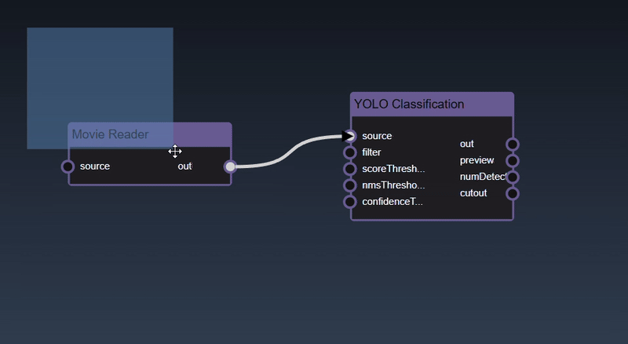
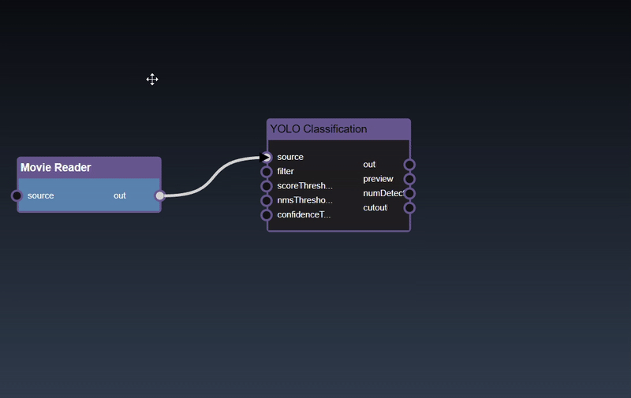
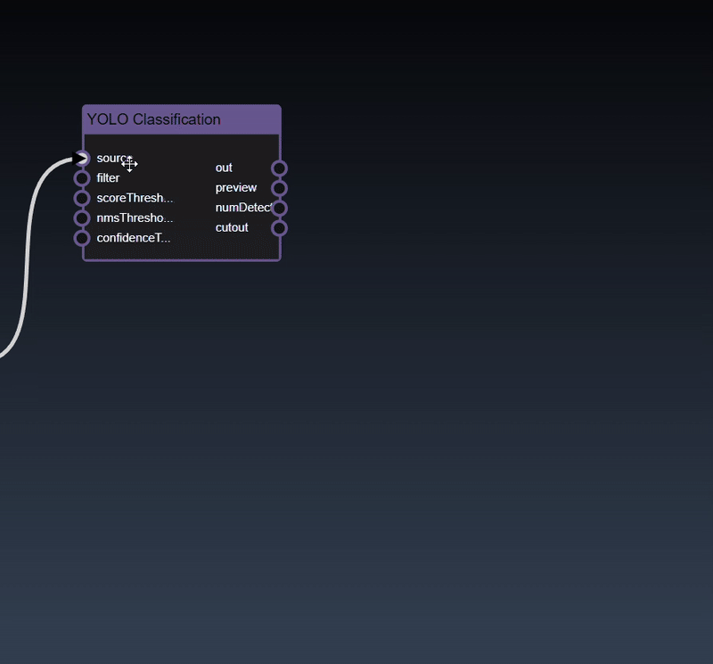
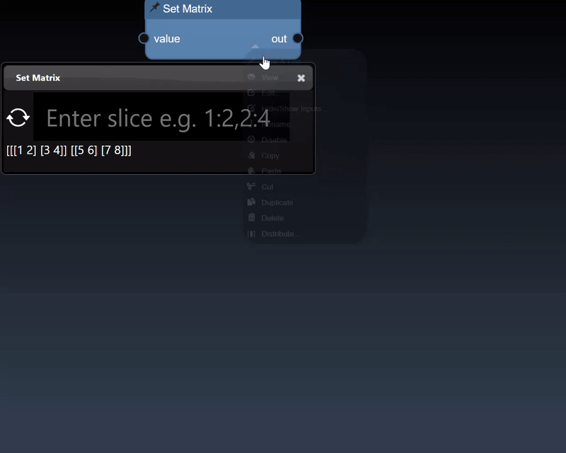
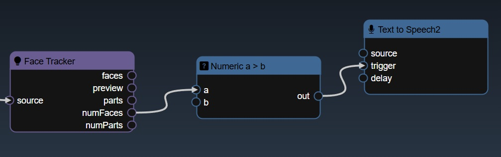
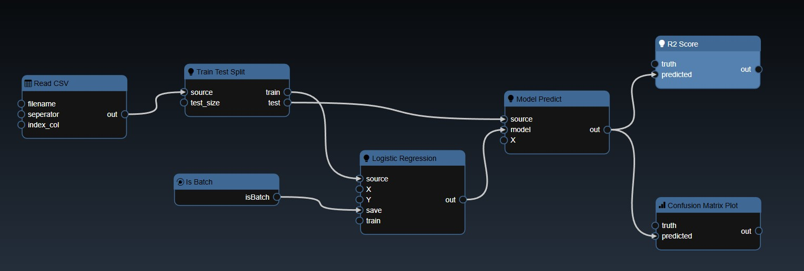
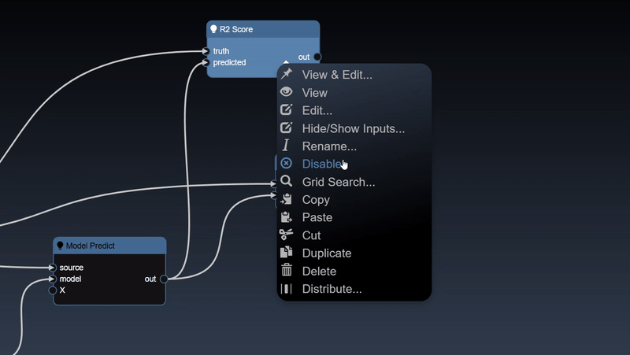

A platform for building AI, ML, & Computer Vision pipelines using real-time sensing data
INFINIWORKFLOW runs in a browser with the following main UI components

The application menu allows the following functionality
The tool catalog allows you to add new tools as nodes into your flowgraph
The first tab will show all the tools and the remaining tabs show a subset of tools such as related to computer vision or ML etc. You can hover over the tab icon and a tooltip will show you the category name. Once a category tab is selected you can further refine the list of tools shown by entering keywords input, this is useful to quickly find a particular tool you want to insert into your workflow.
Hovering over the tools shows a tooltip description of the tool. To insert a tool into the workflow can be done with the following gestures:
Drag and Drop

Insert a node with edge automatically can be done by selecting the node you wish to connect it to and then double clicking the tool - a new node will be inserted and a link will automatically be added as well.

The flowgraph is used to construct your workflow that comprises of Nodes and Edges. Nodes represents functions that have input and generate outputs. These nodes are created by dragging tools into your workflow from the Tools Catalog. A node's input and output have 'ports' which are where edges can be connected. Edges are connections between the output port of an upstream node to the input port of a upstream node. Any inputs ports that are unconnected can also be set to specific values using the Parameter Editor. The color of the node indicates the following:
| C++ Nodes (can be executed on GPU or CPU) | |
| Python Nodes (can be executed on GPU or CPU) | |
| Cuda Kernels (always executed on the GPU) | |
| Widget nodes (executed on the CPU) |
The flowgraph has the following components:
Adding an Edge to connect the output of an upstream node to the input of a downstream node. In this example, we want to have the Yolo Classification be done on a Movie Reader, we thus connect the output of the Movie Reader node to the input of the Yolo Classification node. Click on the source port of the upstream node and the drag to the destination port of the downstream node. A green line color indicates that the edge is allowed which is based on the type matching between the two ports

If the types do not match then a red line color indicates that the edge is invalid
There are a few exceptions to allow different types to be connected to each other. For example, the image2D type, which represents a 2D image in system memory, can be connected to a type cuda2D, a 2D image in GPU memory and vice-versa. The exceptions are as follows:
| Output Type | Input Type |
|---|---|
| * | Any type |
| Any type | * |
| image2D, matrix2D, buffer2D, cuda2D or texture2D | *2D |
| image2D, matrix2D or cuda2D | image2D, matrix2D or cuda2D |
| double, int, bool or numeric | double, int, bool or numeric |
| double, int, bool or numeric | double, int, bool or numeric |
| numeric2 | double2, int2 |
| double2, int2 | numeric2 |
| numeric3 | double3, int3 |
| double3, int3 | numeric3 |
Removing an Edge disconnects the output of upstream node to the input of a downstream node. In this example we no longer want the Yolo Classification be done on the output of the Movie Reader. Hover over the edge, it will indicate it can be deleted when a change in cursor happens, then click on the edge to delete it

To see the type of a node's input or output, hover over the port and it will show as a tooltip

Select a node can be done with a single click on the node. The node is shown highlighted in blue when it is selected
Clicking and dragging on a node will select it and also allow you to move the node around in the flowgraph
Holding the shift key whilst clicking allows you to add more nodes to the selection

To deselect all the nodes you can click on the flowgraph
Multiple nodes can also be selected by doing a rectangular selection, hold the alt key and drag the mouse which shows a box selection which will select all the nodes in the rectangle intersection after the mouse is released
To delete a node can be done by clicking the delete key
To 'View & Edit' a node, double click the node, if there are multiple outputs a menu will allow you to select which output you wish to view
To View a specific output you can double click on the output port of the node
You can also 'rip' a node to remove it from the edges by shaking the node quickly

To zoom into the center of the flowgraph you can press the + hotkey
To zoom out of the flowgraph you can press the - hotkey
To zoom fit flowgraph, showing all nodes in viewport, you can press the f hotkey
To pan the flowgraph you can click and then drag the mouse. This allows you to navigate the workflow in the flowgraph when it becomes more complex
You can also zoom in and out using mouse scroll wheel or zoom gesture

When nodes are not in the visible viewport then indicators are shown on the boundary of the viewport. The indicators are useful to highlight scrolling or zooming will yield hidden nodes.

Clicking the left mouse button over the node brings up the node context menu and also selects the node
Inspect and adjust functions
Node attribute functions
Performance related functions
Input/output port related functions
ML functions are available when ML nodes are selected
Clipboard functions
Experimental functions
When you bring up the context menu without a node selected, the flowgraphs viewport functions are shown:
The Parameter Editor allows you to edit the parameters of the currently edited node
The UI consists of the tool icon and the name of the node that is being editoed, followed by the list of input parameters of the edited node and finally the dialog buttons. The description link, which shows the name of the edited node, when clicked will open a webpage that has the description of the tool. The input parameters are shown for any inputs that are not connected via the flowgraph.
Hovering over the parameter will show the description of the parameter:

The dialog buttons allow you to close the dialog - either you can accept the changes made by clicking OK, or reject any changes made to the parameters by clicking Cancel. A button also allows you to Reset All the parameters to the original default tool settings. The UI for each parameter input will be based on the type of the input, but all of them will have a reset icon that allows you to reset that particular parameter input back to its default value. The different types of parameter UI controls are as follows
| UI Look | Example | Description |
|---|---|---|
| Numeric textfield | A numeric input allows you to enter a value. There are also step controls that allow you to increment one unit up and down. | |
| Numeric2 textfield |  |
Two numeric inputs allow you to enter both numerical values |
| Numeric slider |  |
If the slider has minimum and maximum values a slider appears |
| Numeric2 slider |  |
Two numeric inputs with sliders that can optionally be locked together to modify both values at the same time |
| Checkbox |  |
A checkbox toggle to allow you to set values of true or false |
| Selection menu | A selection menu allows you to set the value to one of the predefined values from a permitted set of values in the selection menu | |
| Multi selection menu |  |
Multi selection allows you to add tags of permitted values. Click on the widget and a list of permitted values will show up. In some cases youur own user defined values that are not in the permitted set of values |
| Textfield |  |
A multi line textfield to allow you to enter the value for string parameters |
| Point |  |
A point allows you to set the values with a textfield and also has an icon that when clicked opens the viewer and you can select a point by clicking in the image directly |
| Color |  |
A color button when clicked allows you to set the color using a color dialog 
|
| Curve |
An icon when pressed opens the bezier curve editor
|
|
| Map |  |
A map is a series of key/value pairs.
Clicking on the widget opens a dialog editor that shows documentation as well as
allow you to enter the key abd value pair
|
| Filebrowser |  |
An icon when pressed opens the IO Dialog that allows you to set the file location. The prefix ${assets} is used to specify the file location is in the assets folder. |
| Tabs |  |
Some of the tools also have a Tab user-interface to layout the controls into different tabs. |
The viewer allows you to view the outputs of the currently viewed node
A node can be viewed using the node context menu and selecting 'View' or 'View & Edit'. When viewing a node with multiple outputs a menu will ask which output to view (alternatively, if you wish to view a specific output of a node, you can double click the output port directly and avoid needing to select from the menu)

The viewer also has controls to zoom and pan. Using the mouse scroll wheel or zoom gesture you can also then pan by dragging the image. When zoomed in, a thumbnail is shown of the full image together with a slider to set the zoom amount.

Point parameters in the Parameter Editor can be set in the viewer. Select the overlay icon and then click in the viewer to set the location of the point:

Only one node can be viewed at one time in the viewer. However, the flowgraph can also show multiple the output of multiple nodes at the same time. For example, using the 'Thumbnail Image Display' tool allows you to show images that are drawn in the flowgraph directly. Additional Display Nodes are available that can be used to view different types of outputs directly on the flowgraph.
The viewer, on top of displaying images, has specific UI to display mutli-dimensional data:
Dataframes represent 2D tables and are implemented using the Pandas Python module. The viewer displays the DataFrame as a HTML table. Additional controls allow you to slice a set of the rows and columns, in the example below we slice rows [30-40). The icon allows different views of the table including showing the sliced rows and columns, with red cells represent missing data, a summary description of the statistics of each column, a line chart of the numerical columns and the description of the types of each column:
Numpy represent multidimensional numerical arrays and are implemented using the Numpy Python module. You can set a matrix using the Set Matrix tool The viewer can display Numpy arrays in a variety of different visualizations where it will select the most useful visualization first and by clicking the allows you to visualize other representations of the arrays. Slicing controls are also available to reduce the tensor to a subset of its numerical data.
A 1D dimensional array can be randomly generated or set using the Set Matrix tool, with numbers separated by spaces, commas, semicolons, or tabs. It can be viewed as a histogram; a dot plot; a line chart and a histogram chart:

A 2D dimensional array can be randomly generated or set using the Set Matrix tool, with rows of numbers each separated by spaces, commas, semicolons, or tabs. It can be viewed as a heatmap; a 3D height map plot; a line chart and a table:

A 2D dimensional array can be randomly generated or set using the Set Matrix tool, with entries separated by commas where each entry can be a number or a list denoted by []. A 3D dimensional tensor can be viewed as a 3D plot and as a list of lists:
Tensors represent multi-dimensional numerical arrays and are implemented using the PyTorch Python module. The viewer can display tensors in a variety of different visualizations where it will select the most useful visualization first and by clicking the allows you to visualize other representations of the tensor. Slicing controls are also available to reduce the tensor to a subset of its numerical data.
A 1D dimensional tensor can be viewed as a histogram; a dot plot; a line chart and a histogram chart:

A 2D dimensional tensor can be viewed as a heatmap; a 3D height map plot; a line chart and a table:

A 3D dimensional tensor can be viewed as a 3D plot and abbreviated tensor list:

Images can also be converted to tensors (using the 'Image to Tensor' tool) and they will be viewed as a 3D image; a 3D height map plot; a 3D color space plot, and abbreviated tensor list:

A set of tools, called Widgets, are available that provide user interface controls directly in the flowgraph

These widgets are an easy way to modify the parameters without having to open the Parameter Editor - you can selectively decide which parameters are important enough to add as widgets to the flowgraph. For example, the following flowgraph has a number of widgets added: a "Filebrowser Widget", a "Selection List Widget" and a "Slider Widget" are added to the flowgraph as well as two "Output Widgets":
You can now modify those controls directly in the flowgraph. Furthermore, the widgets can be used in conjunction with the 'Publish' feature. You can refine how the widget will be shown in the Publish view by setting the Widgets parameters - edit the Widget in the Parameter Editor and you can set the widget attributes. Widget attributes include the name which will show in the published view for each widget. Widgets such as Sliders allow you to set their specific attributes such as the minimum, maximum and step value for the Slider widget. All widgets have the common attributes of the name and description (used for tooltips) as well as layouts. The layouts allow you to specify an optional Tab that the widget will be placed in and also the order in which the control will be ordered in the UI (a lower order will allow the control at the top of the layout). An example of the Widget Slider's parameters are as follows:
See the reference section for the full list of Widget Tools
See the section on 'publishing' to understand how you can leverage widgets in published workflows.
A set of tools, called Displays, are available that provide viewing displays directly in the flowgraph This allows you to constantly monitor the output of multiple nodes and avoid switching back and for using the Viewer. For example, the "Thumbnail Image Display" tool shows the results of a the image output of a node:
If you instead want to visualize the full size image rather than the thumbnail, you can use the 'Full Image Display' tool. This shows the image at the actual resolution in pixels in thr flowgraph:

You can also display a matrix (matrix2D) output using the 'Matrix2D Display' tool that shows the results in the form of a table:

DataFrames can also be displayed as tables on the flowgraph using the 'DataFrame Display'. The first few rows of the table are shown, and double clicking the display node will show the other visualizations (such as the statistics and datatypes views):

Tensors can be displayed using the 'Tensor Display'. Double clicking the node will show the other visualizations for the tensor:

Additionally, displays are available for all the other types such as integers, doubles, booleans etc. These displays are useful to get realtime visualization of the various node outputs in your flowgraph:
See the reference section for the full list of Display Tools
You can create triggers to activate certain nodes that require the trigger to start execution. Typically, you can use the various boolean expression - for example, in the workflow below, the number of detected faces is applied to a "Numeric a>b" tool, this will yield a true value whenever the number of faces is greater than a certain amount. The output of this node is a "trigger" that is used to execute the "Text to Speech" node.
As well as creating triggers automatically based on your outputs of the nodes on your flowgraph, you can also create manual triggers. The Widgets include a "Widget Bool Trigger" and a "Widget Int Trigger". A bool trigger creates a "binary pulse", whereas an int trigger generates a staircase function. Both are useful to manually trigger a node or use one trigger to manually trigger multiple nodes.
Post Triggers is an experimental feature that allows you to update a Trigger based on when downstream Python nodes have executed and trigger an upstream Python node. This allows you to do "for" loops as the workflow graph is acyclic - meaning no edges can connect a downstream node to an upstream node, so loops are not allowed. However, with this feature you can make a trigger happen upstream when a downstream node is executed. The first step to create a trigger is to select the downstream node you wish to generate the trigger, then double click the trigger input port of the upstream node. Then you will select the type of modification you wish for the trigger : increment, decrement or reset the trigger. Then, you will select the condition on when the trigger modification will take place: always, <, ≤, =, ≥ or >. And finally, the condition value associated with when you wish to make this trigger occur. In the following, we create an increment on the trigger when the value is less than 10:
Once you set a Post Trigger, whenever you select the downstream node, you will see an animation of the trigger to highlight which upstream node that has the trigger input, the trigger port will flash and a tooltip will indicate the condition which will exeucte the trigger:

To remove all Post Triggers by double clicking the trigger port but ensuring no other nodes are selected:
As mentioned, Post Triggers are only allowed between Python nodes.
The Data Science tools are all under the Data Frame category. The implementation is based on Pandas, an open source data analysis and manipulation library. A DataFrame can be loaded with the "Read CSV" or "Read Excel" tools or created programmatically with the "Random Table" tool or converting from numpy or tensors. For many of the tools, they will use "Column" or "Columns" properties representing a choice of a single column or a subset of columns. Some of the tools also have an "arg" property which is a map parameter that allows you to pass in additional key/value pair optional arguments The Key/Value Dialog UI will show the corresponding Pandas function's documentation which is useful to determine the additional parameters you wish to set.
See the reference section for the full list of Data Science Tools
A number of tools are available to create charts for DataFrames. These tools are all under the Plot category. Each plot tool has parameters placed into two different tabs: Data and Layout. The Data parameters allow you to set the columns you wish to plot and the Layout parameters allow you to adjust the title of the chart etc. For example, the "Line Plot" tool has the following Data parameters:
The X and Y allow you to set the columns you wish for the X and Y-axis. If no columns are set for the Y-axis then the plot will include all numerical columns in the DataFrame. If the X parameter is not set then the index of the DataFrame will be used as the X-axis. In the example, below two columns (sbp and tobacco) are plotted for Y against the "row.names" column:

The Layout tab allows you to specify the title for the chart as well as the labels for the axis. You can also hide or show the Legend and set the size of the figure in inches. The "color" parameter is a multi-selection list parameter that you can set colors such as "red", or #6580ab etc. If you have two Y columns you plot then if you set one color both line charts will use the same color but if you set two colors in the list then you can distinguish each line chart.

An subset of the plot tool visualizations are as follows:
 |
|
 |
|
 |
 |
See the reference section for the full list of Plot Tools
The Machine Learning filters are based using scikit-learn Python module are all under the ML category. Each ML tool has 3 tabs: Train, Hyperparameters and Export. The Train parameters allow you to set the X and Y columns as well as a trigger to start the training. As training can be slow so a trigger is used to start the process, however, when doing a grid search, the trigger is automatically generated. An example of the training parameters for the 'Logistic Regression' ML Tool is shown as follows:
In this scenerio, we are training a model based on the tobacco column to predicy heart disease (chd). Clicking the "train" trigger will start the process of fitting the data to create a ML model. The Hyperparameters tab has the specific hyperparameters that allow customization and tuning of the model. The hyperparameters for the logistic regression tool are as follows:
Each ML training tool will have a different set of hyperparameters and these will show up in the Grid Search dialog. Additionally, an "arg" map parameter is also included which allows you to set any parameters that are not in the UI - this is a map of key/values pairs. After clicking the "arg" widget, the Key/Value dialog appears that shows the documentation of the ML model, this is useful so you can review any additional parameters you may wish to set:
The Export tab allows you to set whether you want to save the model to a file, by default models will not be saved but it is recommended to save your models whenever you have complex models that take time to execute. A common practice when doing grid search is to connect the "Is Batch" Tool to the "save" input parameter of the model - this will always be true when a grid search is done in a background batch process - thus, the models will be saved during the grid search process.

The typical approach to building models involves splitting your training data into test and train splits. The following workflow illustrates the steps involved and the nodes required to implement the training:
The CSV file is read and then a test train split is done, the training table is then passed to the ML model. In this case the "Is Batch" Tool is used to set the "save" parameter which will automatically save the model for any Grid Search. The output of the model is then passed to a model predict and the predicted values can be compared against the ground truth to establish the accuracy of the model. In this scenerio, we use a confusion matrix to plot the accuracy of the results. And a ML metric nodes such as "R2 Score" allow you to see the accuracy and it can be further used to initiate a Grid Search.
See the reference section for the full list of ML Tools
The AI Inference algorithms including using pretrained models tools are all under the AI category. The full list of display tools is as follows:
| Name | Icon | Inputs | Outputs | Description |
|---|---|---|---|---|
| Body Pose COCO |
|
| Body Pose COCO detection using CAFFE model | |
| Body Pose MPI |
|
| Body Pose MPI detection using CAFFE model | |
| Colorization |
|
| Colorization | |
| Depth Inference |
|
| Detects depth using ONNX model | |
| Holistically-Nested Edges |
|
| Detects edges using CAFFE model | |
| Face Tracker |
|
| Detects and tracks facial and body features | |
| Handpose Estimation |
|
| Detects palms and fingers based on OpenPose neural network model. In out, the 1st column is the id of the point, the 2nd and 3rd are the coordinates of that point, and the 4th column is the confidence. | |
| Human Parsing Inference |
|
| Parses (segments) human body parts from an image using opencv's dnn | |
| Mask Inference |
|
| Mask labels objects based on RCNN neural network model | |
| ONNX for Basic Classification |
|
| Performs basic Classification using custom ONNX model | |
| ONNX for Basic Segmentation |
|
| Performs basic Segmentation using custom ONNX model | |
| ONNX for Regression |
|
| Performs Regression using custom ONNX model | |
| Person ReID |
|
| Matches a person's identity across different cameras or locations in a video or image sequence using features such as appearance, body shape, and clothing to match their identity in different frames | |
| Segmentation |
|
| Parses (segments) various objects from an image using opencv's dnn | |
| Speech Recognition |
|
| Detects speech | |
| Text Spotting |
|
| Spots text in images using DNN | |
| YOLO3 Classification |
|
| Detects and labels objects based on YOLO neural network model | |
| YOLO5 Classification |
|
| Detects and labels objects based on YOLO5 neural network model |
The Color Correction tools are all under the Color category. The full list of display tools is as follows:
| Name | Icon | Inputs | Outputs | Description |
|---|---|---|---|---|
| Adaptive Threshold |
|
| The function is typically used to get a bi-level (binary) image out of a grayscale image | |
| Color Brightness |
|
| Change the Brightness thorugh a Look Up Table (L.U.T.) for a Colored Image | |
| Color Contrast |
|
| Change the Contrast thorugh a Look Up Table (L.U.T.) for a Colored Image | |
| Color Curve |
|
| Create a Curve Mask Thorugh a Look Up Table (L.U.T.) for a Colored Image | |
| Convert Colorspace |
|
| Convert Colorspace | |
| BGR->YUV |
|
| BGR to YUV of Cuda Buffer | |
| Brightness |
|
| Change Brightness of Cuda Buffer | |
| Chroma Keyer |
|
| Chroma Key of Cuda Buffer | |
| CIELAB Threshold |
|
| CIELAB Threshold of Cuda Buffer | |
| Contrast |
|
| Change Contrast of Cuda Buffer | |
| Crop |
|
| Crop input image | |
| Gamma |
|
| Change Gamma of Cuda Buffer | |
| Gamma Fwd |
|
| Gamma Fwd of Cuda Buffer | |
| Gamma Inv |
|
| Gamma Inv Cuda Buffer | |
| Grayscale |
|
| Grayscale of Cuda Buffer | |
| HLS->RGB |
|
| HLS to RGB of Cuda Buffer | |
| HSL Correct |
|
| Modify Color of Cuda Buffer Using HSL Sliders | |
| HSV->RGB |
|
| HSV to RGB of Cuda Buffer | |
| HSV Correct |
|
| Modify Color of Cuda Buffer Using HSV/HSB Sliders | |
| Hue Threshold |
|
| Hue Threshold of Cuda Buffer | |
| Invert |
|
| Inverts RGB channels of Cuda Buffer | |
| Levels |
|
| Smoothstep leveling of Cuda Buffer Using Gamma Function | |
| Lift |
|
| Change Lift of Cuda Buffer | |
| RGB->HLS |
|
| RGB to HLS of Cuda Buffer | |
| RGB->HSV |
|
| RGB to HSV of Cuda Buffer | |
| RGB->YUV |
|
| RGB to YUV of Cuda Buffer | |
| RGB Threshold |
|
| RGB Threshold of Cuda Buffer | |
| Smoothstep |
|
| Smoothstep of Cuda Buffer | |
| YUV->BGR |
|
| YUV to BGR of Cuda Buffer | |
| YUV->RGB |
|
| YUV to RGB of Cuda Buffer | |
| Debayer |
|
| Debayer | |
| Histogram Equalization |
|
| Histogram Equalization | |
| Color Gamma |
|
| Change the Gamma thorugh a Look Up Table (L.U.T.) for a Colored Image | |
| Grayscale |
|
| Convert to grayscale | |
| HSL->HSV |
|
| Convert Colorspace | |
| HSL->RGB |
|
| Convert Colorspace | |
| HSV->RGB |
|
| Convert Colorspace | |
| In Range |
|
| Threshold if between min and max | |
| Invert Color |
|
| Invert Color Using Bitwise Not | |
| Color Lift |
|
| Lifts the Brightness thorugh a Look Up Table (L.U.T.) for a Colored Image | |
| RGB->HSL |
|
| Convert Colorspace | |
| RGB->HSV |
|
| Convert Colorspace | |
| RGB->YUV |
|
| Convert Colorspace | |
| Threshold |
|
| The function is typically used to get a bi-level (binary) image out of a grayscale image | |
| YUV->HSV |
|
| Convert Colorspace | |
| YUV->RGB |
|
| Convert Colorspace |
The Combine and Split Images tools are all under the Composite category. The full list of display tools is as follows:
| Name | Icon | Inputs | Outputs | Description |
|---|---|---|---|---|
| Absolute Difference |
|
| Absolute Difference Operations on Two Images | |
| Add |
|
| Add Operations on Two Images | |
| Bitwise And |
|
| Bitwise And Operations on Two Images | |
| Binary |
|
| Binary Operations on Two Images | |
| Add |
|
| Composite with Add blend mode | |
| Average |
|
| Composite with Average blend mode | |
| Blend |
|
| Change Blend of Cuda Buffer | |
| Color Burn |
|
| Composite with Color Burn blend mode | |
| Color Dodge |
|
| Composite with Color Dodge blend mode | |
| Darken |
|
| Composite with Darken blend mode | |
| Difference |
|
| Composite with Difference blend mode | |
| Exclusion |
|
| Composite with Exclusion blend mode | |
| Glow |
|
| Composite with Glow blend mode | |
| Hard Light |
|
| Composite with Hard Light blend mode | |
| Hard Mix |
|
| Composite with Hard Mix blend mode | |
| Lighten |
|
| Composite with Lighten blend mode | |
| Linear Burn |
|
| Composite with Linear Burn blend mode | |
| Linear Dodge |
|
| Composite with Linear Dodge blend mode | |
| Linear Light |
|
| Composite with Linear Light blend mode | |
| Multiply |
|
| Composite with Multiply blend mode | |
| Negation |
|
| Composite with Negation blend mode | |
| Normal |
|
| Composite with Normal blend mode | |
| Overlay |
|
| Composite with Overlay blend mode | |
| Phoenix |
|
| Composite with Phoenix blend mode | |
| Pin Light |
|
| Composite with Pin Light blend mode | |
| Reflect |
|
| Composite with Reflect blend mode | |
| Screen |
|
| Composite with Screen blend mode | |
| Soft Light |
|
| Composite with Soft Light blend mode | |
| Subtract |
|
| Composite with Subtract blend mode | |
| Vivid Light |
|
| Composite with Vivid Light blend mode | |
| Divide |
|
| Divide Operations on Two Images | |
| Draw Circles |
|
| Draws Circles | |
| Draw Contours |
|
| Draws contours outlines or filled contours | |
| Draw Lines |
|
| Draws Lines | |
| Draw Paths |
|
| Draws Paths | |
| Draw Rectangles |
|
| Draws Rectangles | |
| Draw Shapes |
|
| Draws Lines, Circles, and/or Rectangles | |
| Draw Text |
|
| Draws Text String | |
| Extract Channel |
|
| Extract One Channel | |
| Horizontal Combine |
|
| Horizontally Combine Two Images | |
| Maximum |
|
| Maximum Operations on Two Images | |
| Merge |
|
| Merges inputs into one channel. | |
| Minimum |
|
| Minimum Operations on Two Images | |
| Multiply |
|
| Multiply Operations on Two Images | |
| Bitwise Not |
|
| Inverts every bit of an array | |
| Bitwise Or |
|
| Bitwise Or And Operations on Two Images | |
| Split |
|
| Splits image into individual channels. | |
| Per Element Sqrt |
|
| Calculates a square root of array elements | |
| Subtract |
|
| Subtract Operations on Two Images | |
| Switch Image2D |
|
| Outputs one of the selected inputs | |
| Vertical Combine |
|
| Vertically Combine Two Images | |
| Bitwise XOR |
|
| Bitwise XOR Operations on Two Images |
The Datascience filters tools are all under the Datascience category. The full list of display tools is as follows:
| Name | Icon | Inputs | Outputs | Description |
|---|---|---|---|---|
| Bool Cell |
|
| Get bool cell value. | |
| Columns |
|
| Returns a subset of columns | |
| Columns Table |
|
| Returns the columns of the table | |
| Count Table |
|
| Returns the count of the table | |
| Group By Count Table |
|
| Returns the table with grouped count | |
| Double Cell |
|
| Get double cell value. | |
| Drop Columns Table |
|
| Returns the table with some columns dropped | |
| Drop Nan Columns |
|
| Drop any columns with Not a Number | |
| Drop Nan Rows |
|
| Drop any rows with Not a Number | |
| Drop Rows Table |
|
| Returns the table with some rows dropped | |
| Fill Nan Columns |
|
| Fill any columns with Not a Number | |
| Fill Nan Rows |
|
| Fills any rows with Not a Number | |
| Index Location Table |
|
| Integer-location based indexing for selection by position. | |
| Int Cell |
|
| Get int cell value. | |
| Join Table |
|
| Join Two Tables | |
| Export Matrix2D |
| Exports CSV file from Matrix2D | ||
| Max Table |
|
| Returns the max of the table | |
| Group By Max Table |
|
| Returns the table with grouped max | |
| Mean Table |
|
| Returns the mean of the table | |
| Group By Mean Table |
|
| Returns the table with grouped mean | |
| Merge Table |
|
| Merges Two Tables | |
| Min Table |
|
| Returns the min of the table | |
| Group By Min Table |
|
| Returns the table with grouped min | |
| Numpy To Table |
|
| Converts numpy to dataframe | |
| One Hot Encoding |
|
| Reflect the DataFrame over its main diagonal by writing rows as columns and vice-versa | |
| Random Table |
|
| Return random table | |
| Read CSV |
|
| Read CSV file into Panda Table | |
| Read Excel |
|
| Read Excel into Panda Table | |
| Sample Table |
|
| Returns the sampled table | |
| Set Table |
|
| Set values in table | |
| Table Shape |
|
| Returns the number of rows and columns | |
| Sort Columns |
|
| Sort Columns | |
| Sort Rows |
|
| Sort Rows | |
| STD Table |
|
| Returns the standard deviation of the table | |
| Group By STD Table |
|
| Returns the table with grouped standard deviations | |
| String Cell |
|
| Get string cell value. | |
| Sum Table |
|
| Returns the sum of the table | |
| Group By Sum Table |
|
| Returns the table with grouped sums | |
| Export CSV |
| Exports CSV file from Panda Table | ||
| Transpose Table |
|
| Reflect the DataFrame over its main diagonal by writing rows as columns and vice-versa | |
| Value Counts Table |
|
| Returns the number of unique rows of the table | |
| Where Table |
|
| Returns the table after a query is performed |
The Experimental Tools tools are all under the Experimental category. The full list of display tools is as follows:
| Name | Icon | Inputs | Outputs | Description |
|---|---|---|---|---|
| Abs Subtraction Shaders |
|
| Find Absolute Value of Difference Between 2 Images using a GPU Shader | |
| Add Shaders |
|
| Add 2 Images Together using a GPU Shader | |
| Beams Shader |
|
| Applies Beam Rendering | |
| Brightness Shader |
|
| Change the Brightness using a GPU Shader | |
| Clouds Shader |
|
| Applies Cloud Rendering | |
| Contrast Shader |
|
| Change the Contrast using a GPU Shader | |
| Dissolve Shaders |
|
| Dissolve 2 Images Together using a GPU Shader | |
| Texture Download |
|
| Downloads to CPU System Memory from GPU Texture Memory | |
| Flip Shader |
|
| Flips horizontal/vertical | |
| Gamma Shader |
|
| Change the Gamma using a GPU Shader | |
| Geo Api |
|
| Geo Api | |
| Grayscale Shader |
|
| Change a Color Texture to Grayscale using a GPU Shader | |
| Horizontal Ramp |
|
| Change Color Texture with Vertical Ramp using a GPU Shader | |
| Invert Shader |
|
| Inverts RGB channels of OpenGL Texture | |
| Lift Shader |
|
| Change the Lift using a GPU Shader | |
| Max Shaders |
|
| Find Max of 2 Images Together using a GPU Shader | |
| Min Shaders |
|
| Find Min of 2 Images Together using a GPU Shader | |
| Multiply Shaders |
|
| Multiply 2 Images Together using a GPU Shader | |
| Primatte AI |
|
| Primatte AI | |
| Reverse Geo Api |
|
| Reverse Geo Api | |
| Sobel Shader |
|
| Applies Soberl Edge Filter | |
| Stock Price |
|
| Stock Price using Yahoo Finance | |
| Subtract Shaders |
|
| Subtract 2 Images Together using a GPU Shader | |
| Texture Output |
| Outputs Native Viewer | ||
| Transform Shader |
|
| Transform 2D Shader using a GPU Shader | |
| Texture Upload |
|
| Uploads CPU System Memory to GPU Texture Memory | |
| Vertical Ramp |
|
| Change Color Texture with Vertical Ramp using a GPU Shader | |
| Virtual Set |
|
| OpenSceneGraph based Virtual Set |
The Image Processing Filters tools are all under the Image Processing category. The full list of display tools is as follows:
| Name | Icon | Inputs | Outputs | Description |
|---|---|---|---|---|
| Bilateral Filter |
|
| Applies bilateral filter to image | |
| Blur |
|
| Blurs an image using the normalized box filter | |
| Box Filter |
|
| Blurs an image using the box filter | |
| Build Pyramid |
|
| Constructs the Gaussian pyramid for an image. 4 images outputted. | |
| Cam Shift |
|
| Finds the rotated rectangle with the maximum number of points. When the object moves, the movement is reflected in the meanshift algorithm | |
| Canny Edge Detector |
|
| Canny Edge Detection is a popular edge detection algorithm | |
| Convert Depth |
|
| Convert Depth Precision between 8u, 8s, 16u, 16s, and 32f | |
| Detect Circles |
|
| Detects circles in a grayscale image using the Hough transform. | |
| Detect Lines |
|
| Detects lines in a grayscale image using the Hough transform. | |
| Dilate |
|
| Blur and dilate image with vertical and horizontal blur | |
| Dilate 3x3 |
|
| Blur image based on maximum luminance value of surrounding pixels | |
| Erode |
|
| Blur and erode image with vertical and horizontal blur | |
| Erode 3x3 |
|
| Blur image based on minimum luminance value of surrounding pixels. 3x3 pixels are blurred at a time. | |
| Gauss |
|
| Gauss Filter on Cuda Buffer | |
| High Pass |
|
| High Pass Filter on Cuda Buffer | |
| Iterative Blur |
|
| Blur image using iterative 3x3 blurs | |
| Laplace |
|
| Laplace Filter on Cuda Buffer | |
| Low Pass |
|
| Low Pass Filter on Cuda Buffer | |
| Median Blur |
|
| Blur image using median 3x3 blurs | |
| Prewitt |
|
| Combination of Prewitt Horiz and Prewitt Vert on Cuda Buffer | |
| Roberts |
|
| Combination of Roberts Filter Down and Roberts Filter Up on Cuda Buffer | |
| Separable Blur |
|
| Blur image with vertical and horizontal blur | |
| Sharpen |
|
| Filters the Cuda Buffer using a sharpening filter kernel | |
| Sobel |
|
| Combination of Sobel Horiz and Sobel Vert on Cuda Buffer | |
| Delay |
|
| Shows a Delayed Image | |
| Dilate |
|
| Dilates an image (expands the primary object) by using a specific structuring element that determines the shape of a pixel neighborhood over which the maximum is taken | |
| Erode |
|
| Erodes an image (shrinks the primary object) by using a specific structuring element that determines the shape of a pixel neighborhood over which the minimum is taken | |
| Filter 2D |
|
| Convolves an image with the kernel, applying an arbitrary linear filter to an image | |
| Find Countours |
|
| Finds contours in a binary image | |
| Detect Circles |
|
| Detects circles in a grayscale image using the Hough transform. | |
| Detect Lines |
|
| Detects lines in a grayscale image using the Hough transform. | |
| Laplacian Edge Detector |
|
| Laplacian Edge Detect | |
| Mean Shift |
|
| Finds the rectangle with the maximum number of points. When the object moves, the movement is reflected in the meanshift algorithm | |
| Mean Color |
|
| Calculates an average (mean) value of array elements, independently for each channel | |
| Mean Mask |
|
| Calculates an average (mean) value of array elements for a grayscale image | |
| Median Blur |
|
| Blurs an image using the median filter | |
| Pyr Down |
|
| Blurs an image and downsamples it | |
| Pyr Up |
|
| Upsamples an image and then blurs it | |
| Scharr Edge Detector |
|
| Scharr Edge Detect | |
| Sep Filter 2D Gabor |
|
| Applies a separable linear filter to an image | |
| Sep Filter 2D Gaussian |
|
| Applies a separable linear filter to an image | |
| Sobel |
|
| Detects edges by calculating the first, second, third, or mixed image derivatives using an extended Sobel operator | |
| Spatial Gradient |
|
| Calculates the first order image derivative in both x and y using a Sobel operator, which emphasizes regions of high spatial frequency that correspond to edges. | |
| Sqr Box Filter |
|
| Blurs an image using the box filter by calculating the normalized sum of squares of the pixel values overlapping the filter | |
| Stack Blur |
|
| Blurs an image by creating a kind of moving stack of colors whilst scanning through the image | |
| Sum Color |
|
| Calculates and returns the sum of array elements, independently for each channel | |
| Sum Mask |
|
| Calculates and returns the sum of array elements for a grayscale image |
The Source Inputs tools are all under the Inputs category. The full list of display tools is as follows:
| Name | Icon | Inputs | Outputs | Description |
|---|---|---|---|---|
| Folder Reader |
|
| Reads filepaths from a folder | |
| Grayscale Image Reader |
|
| Reads Grayscale Images from a file | |
| Image Reader |
|
| Reads Images from a file | |
| JSON File Reader |
|
| Reads from a JSON file | |
| Movie Reader |
|
| Reads Images from a movie | |
| Take Picture |
|
| Takes a picture | |
| Text File Reader |
|
| Reads from a text file | |
| Webcam |
|
| Reads Images from a webcamera | |
| YouTube Reader |
|
| Streams data from a YouTube video |
The Logic functions tools are all under the Logic category. The full list of display tools is as follows:
| Name | Icon | Inputs | Outputs | Description |
|---|---|---|---|---|
| And |
|
| Logical AND operator | |
| Conditional Color Operator |
|
| Outputs one of the selected inputs | |
| Conditional Double2 Operator |
|
| Outputs one of the selected inputs | |
| Conditional Double3 Operator |
|
| Outputs one of the selected inputs | |
| Conditional Image2D Operator |
|
| Outputs one of the selected inputs | |
| Conditional Int2 Operator |
|
| Outputs one of the selected inputs | |
| Conditional Int3 Operator |
|
| Outputs one of the selected inputs | |
| Conditional Matrix Operator |
|
| Outputs one of the selected inputs | |
| Conditional Numeric Operator |
|
| Outputs one of the selected inputs | |
| Conditional String Operator |
|
| Outputs one of the selected inputs | |
| False |
| Returns False | ||
| Numeric a == b |
|
| Return if inputs are equal | |
| Numeric a > b |
|
| Return if input a > input b | |
| Numeric a >= b |
|
| Return if input a >= input b | |
| Numeric a < b |
|
| Return if input a < input b | |
| Numeric a <= b |
|
| Return if input a <= input b | |
| Numeric Compare a != b |
|
| Return if inputs are not equal | |
| Or |
|
| Logical OR operator | |
| Range |
|
| Return if number is in range | |
| True |
| Returns True |
The Mask Filters tools are all under the Masks category. The full list of display tools is as follows:
| Name | Icon | Inputs | Outputs | Description |
|---|---|---|---|---|
| Mask Brightness |
|
| Change the Brightness thorugh a Look Up Table (L.U.T.) for a Mask | |
| Mask Circles |
|
| Draws Circles with Masks | |
| Mask Contrast |
|
| Change the Contrast thorugh a Look Up Table (L.U.T.) for a Mask | |
| Mask Curve |
|
| Create a Curve Mask Thorugh a Look Up Table (L.U.T.) | |
| Mask Gamma |
|
| Change the Gamma thorugh a Look Up Table (L.U.T.) for a Mask | |
| Invert Mask |
|
| Inverts the Mask using Bitwise Not | |
| Mask Lift |
|
| Lifts the Brightness thorugh a Look Up Table (L.U.T.) for a Mask | |
| Mask Paths |
|
| Draws Paths with Masks | |
| Mask Rectangles |
|
| Draws Rectangles with Masks | |
| Mask Shapes |
|
| Draws Lines, Circles, and/or Rectangles with Masks |
The Math functions tools are all under the Math category. The full list of display tools is as follows:
| Name | Icon | Inputs | Outputs | Description |
|---|---|---|---|---|
| Abs |
|
| Return absolute value | |
| Arccos |
|
| Return inverse cosine of input x, result is in degrees | |
| Arccosh |
|
| Return inverse hyperbolic cosine of input x | |
| Arcsin |
|
| Return inverse sine of input x, result is in degrees | |
| Arcsinh |
|
| Return inverse hyperbolic sine of input x | |
| Atan2 |
|
| Return inverse hyperbolic tangent of input x | |
| Arctanh |
|
| Return archtan(a) | |
| Ceil |
|
| Return ceil(x) | |
| Cos |
|
| Return cosine of input x (where x is in degrees) | |
| Cosh |
|
| Return hyperbolic cosine of input x | |
| Counter Double |
|
| Counts numbers | |
| Counter Int |
|
| Counts numbers | |
| Divide |
|
| Return a/b | |
| e |
| Returns eulers number | ||
| Exponential |
|
| Return e^x | |
| Floor |
|
| Return floor(x) | |
| Log |
|
| Return log(x,base) | |
| Minus |
|
| Return a-b | |
| Mod |
|
| Return mod(a,b) | |
| Multiply |
|
| Return a*b | |
| One |
| Return number one | ||
| PI |
| Return PI | ||
| Plus |
|
| Return a+b | |
| Power |
|
| Return a^b | |
| Random Number |
|
| Return random number | |
| Sin |
|
| Return sine of input x (where x is in degrees) | |
| Sinh |
|
| Return hyperbolic sine of input x | |
| Sqrt |
|
| Return square root of x | |
| Square |
|
| Return x^2 | |
| Tan |
|
| Return tangent of input x (where x is in degrees) | |
| Tanh |
|
| Return hyperbolic tangent of input x | |
| Zero |
| Return number zero |
The Matrix operations tools are all under the Matrix category. The full list of display tools is as follows:
| Name | Icon | Inputs | Outputs | Description |
|---|---|---|---|---|
| Abs |
|
| Calculate the absolute value element-wise | |
| Add |
|
| Add arguments element-wise | |
| All |
|
| Test whether all array elements evaluate to True | |
| All Close |
|
| Returns if all elements x1 and x2 are within 1e-5 of one another (not suited for very small-valued matrices) | |
| Any |
|
| Test whether any array element evaluates to True | |
| Arange |
|
| Return values spaced by step within a given interval [start, stop] | |
| Per Element Comparison |
|
| Performs the per-element comparison of two arrays or an array and scalar value. When the comparison result is true, the corresponding element of output array is set to 255 | |
| Matrix Concatenate |
|
| Concatentate matrices | |
| Cross Product |
|
| Returns the cross product of 3-element vectors | |
| Determinant |
|
| Compute the determinant of an array | |
| Divide |
|
| Divide arguments element-wise | |
| Dot Product |
|
| Dot product of two vectors | |
| Eigen |
|
| Calculates eigenvalues and eigenvectors of a matrix | |
| Equal |
|
| Return (x1 == x2) element-wise | |
| Identity |
|
| Return a 2-D array with ones on the diagonal and zeros elsewhere. In other words, an identity matrix of size n | |
| HStack |
|
| Stack arrays in sequence horizontally (column wise). All input arrays have the same shape except for the 2nd axis | |
| Index |
|
| Accesses an array at a given matrix index | |
| Integral |
|
| Calculates the integral of an image | |
| Inverse Matrix |
|
| Finds the inverse or pseudo-inverse of a matrix | |
| Linspace |
|
| Returns num evenly spaced samples, calculated over the interval [start, stop] | |
| Least Squares |
|
| Return the least-squares solution to a linear matrix equation. Computes the vector x that approximately solves ax = b | |
| Matrix Multiply |
|
| Calculates the matrix multiplication of two arrays | |
| Max |
|
| Return the maximum of an array | |
| Mean |
|
| Compute the arithmetic mean | |
| Min |
|
| Return the minimum of an array | |
| Per Element Multiply |
|
| Calculates the per-element scaled product of two arrays | |
| Norm |
|
| Calculates the absolute norm of an array | |
| Eigen |
|
| Compute the eigenvalues and right eigenvectors of a square array | |
| Inverse Matrix |
|
| Compute the inverse of a square matrix | |
| Matrix Multiply |
|
| Matrix dot product of two arrays | |
| Per Element Multiply |
|
| Multiply arguments element-wise | |
| Norm |
|
| Matrix or vector norm. Frobenius norm for matrices, L2 norm for vectors. | |
| Trace |
|
| Return the sum along diagonals of the array | |
| Transpose |
|
| Returns an array with axes transposed | |
| Matrix Ones |
|
| Return an array of filled with ones given shape and type | |
| Outer Product |
|
| Compute the outer product of two vectors | |
| Power |
|
| Raise a square matrix to the power n | |
| Pseudo Inverse Matrix |
|
| Compute the (Moore-Penrose) pseudo-inverse of a matrix | |
| QR Factorization |
|
| Compute the qr factorization of a matrix. Factor the matrix a as qr, where q is orthonormal and r is upper-triangular. | |
| Matrix Random |
|
| Random matrices | |
| Matrix Random Normal Distribution |
|
| Random matrices with values chosen from the standard normal distribution | |
| Rank |
|
| Return matrix rank of array using SVD method | |
| Relative Norm |
|
| Calculates an absolute difference norm or a relative difference norm of two arrays | |
| Reshape |
|
| Gives a new shape to an array without changing its data | |
| Select |
|
| Sets the output matrix to the value from the first input matrix if corresponding value of mask matrix is 255, or value from the second input matrix (if value of mask matrix set to 0) | |
| Shape |
|
| Return the shape of an array | |
| Matrix Size |
|
| Gives the matrix number of elements | |
| Solve |
|
| Solve a linear matrix equation, or system of linear scalar equations. Computes the exact solution x of ax = b | |
| Split |
|
| Split an array into multiple sub-arrays based on indices. For example, indices 2 and 3 returns array[:2], array[2:3], and array[3:] | |
| Sqrt |
|
| Return the non-negative square-root of an array, element-wise | |
| Standard Deviation |
|
| Returns the standard deviation of the elements | |
| Subtract |
|
| Subtract arguments element-wise | |
| Sum |
|
| Sum of array elements | |
| SVD |
|
| Singular Value Decomposition | |
| Trace |
|
| Returns the trace of a matrix, the sum of its diagonal elements | |
| Transpose |
|
| Transposes a matrix | |
| VStack |
|
| Stack arrays in sequence vertically (row wise). All input arrays have the same shape except for the 1st axis | |
| Where Matrix Filter |
|
| Return elements chosen from x or y depending on condition. If condition is True, return element from x, otherwise return y | |
| Matrix Zeros |
|
| Return an array of filled with zeros given shape and type |
The Machine Learning filters based using scikit-learn tools are all under the ML category. The full list of display tools is as follows:
| Name | Icon | Inputs | Outputs | Description |
|---|---|---|---|---|
| Bernoulli NB Classifier |
|
| Bernoulli Naive Bayes Classifier model | |
| Categorical NB Classifier |
|
| Categorical Naive Bayes Classifier model | |
| Complement NB Classifier |
|
| Complement Naive Bayes Classifier model | |
| Gaussian NB Classifier |
|
| Gaussian Naive Bayes Classifier model | |
| Gaussian Process Classifier |
|
| Gaussian Process Classifier model | |
| Gaussian Process Regressor |
|
| Gaussian Process Regressor model | |
| KNeighbors Classifier |
|
| KNeighbors Classifier model | |
| KNeighbors Regressor |
|
| KNeighbors Regressor model | |
| Lasso Regressor |
|
| Lasso model | |
| Linear Regression |
|
| Linear regression model | |
| Linear SVC Model |
|
| Linear Support Vector Classifier model | |
| Logistic Regression |
|
| Logistic regression model | |
| MSE |
|
| Calculates Mean Square Error | |
| MLP Neural Network |
|
| Neural Network MLP Classifier model | |
| Load ML Model |
|
| Load a ML model from a designated file | |
| Model Predict |
|
| Predicts test data using model | |
| Save ML Model |
| Save a ML model to a designated file | ||
| Multinomial NB Classifier |
|
| The multinomial Naive Bayes classifier is suitable for classification with discrete features (e.g., word counts for text classification). | |
| Nearest Centroid |
|
| Nearest Centroid Classifier model | |
| R2 Score |
|
| Calculates R2 Score | |
| Random Forest Model |
|
| Random Forest Classifier model | |
| Ridge Classifier |
|
| Ridge Classifier model | |
| Ridge Regressor |
|
| Ridge Regressor model | |
| SGD Classifier |
|
| Stochastic Gradient Descent Classifier model | |
| SGD Regressor |
|
| Stochastic Gradient Descent Regressor model | |
| SVC Model |
|
| Support Vector Classifier model | |
| Train Test Split |
|
| Returns train test split. |
The Display tools that allow you to visualize directly in the flowgraph tools are all under the Outputs category. The full list of display tools is as follows:
| Name | Icon | Inputs | Outputs | Description |
|---|---|---|---|---|
| Bool Display |
| Show Bool | ||
| Color Display |
| Show Color | ||
| DataFrame Display |
| DataFrame Viewer | ||
| Double2 Display |
| Show Double2 | ||
| Double3 Display |
| Show Double3 | ||
| Double Display |
| Show Double Number | ||
| Fullscreen |
| Show Image | ||
| Full Image Display |
| Show Full Image | ||
| imshow Display |
| imshow Image Viewer - only displays on the server | ||
| Int2 Display |
| Show Int2 | ||
| Int3 Display |
| Show Int3 | ||
| Int Display |
| Show Int | ||
| Matrix2D Display |
| Show Matrix2D | ||
| String Display |
| Show String | ||
| Tensor Display |
| Tensor Viewer | ||
| Thumbnail Image Display |
| Show Thumbnail of Image |
The Photron Filters tools are all under the Photron category. The full list of display tools is as follows:
| Name | Icon | Inputs | Outputs | Description |
|---|---|---|---|---|
| Depth Reader |
|
| Reads Depth Images from a file | |
| Infinicam |
|
| View live Images from a Photron Infinicam | |
| Infinicam Save |
| Saves Infinicam Video | ||
| Photron Live |
|
| View live Images from a Photron Highspeed camera | |
| Photron Playback |
|
| Playback Images from a Photron Highspeed camera | |
| Quad Debayer |
|
| Quad Debayer |
The Plot figures tools are all under the Plot category. The full list of display tools is as follows:
| Name | Icon | Inputs | Outputs | Description |
|---|---|---|---|---|
| Area Plot |
|
| Pandas area plot | |
| Bar Plot |
|
| Pandas bar plot | |
| Bar Horizontal Plot |
|
| Pandas line plot | |
| Box Plot |
|
| Pandas box plot | |
| Confusion Matrix Plot |
|
| Plot truth vs prediced | |
| Density Plot |
|
| Pandas density plot | |
| Hexbin Plot |
|
| Pandas hexbin plot | |
| Histogram Plot |
|
| Pandas histogram plot | |
| Line Plot |
|
| Pandas line plot | |
| Metric Plot |
|
| Plot truth vs prediced | |
| Pie Plot |
|
| Pandas scatter pechart | |
| Scatter Plot |
|
| Pandas scatter plot |
The Pytorch functions tools are all under the Pytorch category. The full list of display tools is as follows:
| Name | Icon | Inputs | Outputs | Description |
|---|---|---|---|---|
| Add |
|
| Add Other tensor to Input tensor | |
| Arange |
|
| Returns a 1-D tensor of size ceil((end - start) / step) with values from the interval [start, end) taken with common difference step beginning from start. | |
| BCE Loss |
|
| Creates a criterion that measures the Binary Cross Entropy between the target and the input probabilities. | |
| CIFAR10 Dataset |
|
| Loads the CIFAR10 dataset | |
| Cityscapes Dataset |
|
| Loads the Cityscapes dataset | |
| Concatenate |
|
| Concatenates the given sequence of tensors in tensors in the given dimension. All tensors must either have the same shape (except in the concatenating dimension) or be a 1-D empty tensor with size (0,). | |
| Cross Entropy Loss |
|
| This criterion computes the cross entropy loss between input logits and target. | |
| DataFrame to Tensor |
|
| Converts a Pandas DataFrame to a Pytorch tensor. | |
| Dimensions |
|
| Returns the number of dimensions of tensor. | |
| Divide |
|
| Divides each element of the input input by the corresponding element of other. | |
| Export to ONNX |
| Export a PyTorch model to ONNX. | ||
| FashionMNIST Dataset |
|
| Loads the FashionMNIST dataset | |
| Finetune Trained Model |
|
| Finetune or feature train a pre-existing torchvision model. | |
| Flatten Tensor |
|
| Flattens input by reshaping it into a one-dimensional tensor. If start_dim or end_dim are passed, only dimensions starting with start_dim and ending with end_dim are flattened. The order of elements in input is unchanged. | |
| Generic Dataset |
|
| Loads the Generic dataset | |
| HStack |
|
| Stack tensors in sequence horizontally (column wise). | |
| Image Classification |
|
| Perform image classification on pre-trained model. | |
| Image to Tensor |
|
| Converts a Image to a Pytorch tensor. | |
| L1 Loss |
|
| Creates a criterion that measures the mean absolute error (MAE) between each element in the input x and target y. | |
| Linspace |
|
| Creates a one-dimensional tensor of size steps whose values are evenly spaced from start to end, inclusive. | |
| Alexnet Model |
|
| Loads alexnet model from pytorch/vision repo | |
| Convnext Model |
|
| Loads convnext model from pytorch/vision repo | |
| DeeplabV3 Model |
|
| Loads DeeplabV3 model from pytorch/vision repo | |
| Densenet Model |
|
| Loads densenet model from pytorch/vision repo | |
| EfficientNet Model |
|
| Loads EfficientNet model from pytorch/vision repo | |
| FCN Model |
|
| Loads Fully Convolutional Network model from pytorch/vision repo | |
| Load Torchvision Model |
|
| Loads a model from the pytorch/vision GitHub repo | |
| Googlenet Model |
|
| Loads googlenet model from pytorch/vision repo | |
| InceptionV3 Model |
|
| Loads Inception v3 model from pytorch/vision repo | |
| MnasNet Model |
|
| Loads MnasNet model from pytorch/vision repo | |
| MobileNet Model |
|
| Loads MobileNet model from pytorch/vision repo | |
| Load Torch Model |
|
| Load a trained model from a designated file | |
| Regnet Model |
|
| Loads regnet model from pytorch/vision repo | |
| Resnet Model |
|
| Loads resnet model from pytorch/vision repo | |
| Shufflenet Model |
|
| Loads shufflenet model from pytorch/vision repo | |
| Swin Transformer Model |
|
| Loads Swin Transformer model from pytorch/vision repo | |
| Load Tensor |
|
| Load a tensor from a designated file | |
| VGG Model |
|
| Loads VGG model from pytorch/vision repo | |
| Vision Transformer Model |
|
| Loads Vision Transformer (ViT) model from pytorch/vision repo | |
| Max |
|
| Returns the maximum value of all elements in the input tensor. | |
| Mean |
|
| Returns the mean value of all elements in the input tensor. | |
| Min |
|
| Returns the minimum value of all elements in the input tensor. | |
| MNIST Dataset |
|
| Loads the MNIST dataset | |
| MSE Loss |
|
| Creates a criterion that measures the mean squared error (squared L2 norm) between each element in the input x and target y. | |
| Multiply |
|
| Multiply Input tensor by Other tensor | |
| NLL Loss |
|
| The negative log likelihood loss. It is useful to train a classification problem with C classes. | |
| Classifier Test |
|
| Evaluate the performance of a neural network classifier model. | |
| Classifier Train |
|
| Train a neural network classifier model. | |
| Convolution 2D |
|
| Applies a 2D convolution over an input signal composed of several input planes. | |
| Convolutional Neural Net |
|
| Creates a custom convolutoinal neural network (CNN). Follows the common NN structure of feature learning (comprised of multiple layers of convolution, activation, and pooling), then classification (comprised of several linear+ReLU layers). Each input image must be the same dimensions. | |
| Dropout |
|
| During training, randomly zeroes some of the elements of the input tensor with probability p. The zeroed elements are chosen independently for each forward call and are sampled from a Bernoulli distribution. | |
| Flatten Module |
|
| Flattens a contiguous range of dims into a tensor. Output is a torch.nn.Module. | |
| Linear |
|
| Applies an affine linear transformation to the incoming data: y = x*A^T + b. | |
| Log Softmax |
|
| Applies the log(Softmax(x)) function to an n-dimensional input Tensor. | |
| Max Pooling 2D |
|
| Applies a 2D max pooling over an input signal composed of several input planes. | |
| Regression Test |
|
| Evaluate the performance of a neural network regression model. | |
| Regression Train |
|
| Train a neural network regression model. | |
| ReLU |
|
| Applies the rectified linear unit function element-wise. | |
| Segmentation Test |
|
| Evaluate the performance of a neural network segmentation model. | |
| Segmentation Train |
|
| Train a neural network segmentation model. | |
| Sequential |
|
| A sequential container that is then passed into a basic neural network model. Modules will be added to it in the order they are passed into the constructor. | |
| Sequential Loader |
|
| A sequential container. Modules will be added to it in the order they are passed into the constructor. | |
| Sigmoid |
| Applies the Sigmoid function element-wise. | ||
| Tanh |
| Applies the Hyperbolic Tangent (Tanh) function element-wise. | ||
| NRandom |
|
| Returns a tensor filled with random numbers from a normal distribution with mean 0 and variance 1 (also called the standard normal distribution). | |
| Numeric to Tensor |
|
| Converts a numeric (int or double) to a Pytorch tensor. | |
| Numpy to Tensor |
|
| Converts a Numpy array to a Pytorch tensor. | |
| Ones |
|
| Returns a tensor filled with the scalar value 1, with the shape defined by the variable argument size. | |
| Adam Optimizer |
|
| Implements Adam algorithm. | |
| Per Parameter Optimizer |
|
| Helper node for optimizer nodes. Allows specific values to be applied per-parameter. If a model's parameter is not specified, it will take on the values passed in the main Optimizer node, not in this helper node. | |
| RMSprop Optimizer |
|
| Implements RMSprop algorithm. | |
| SGD Optimizer |
|
| Implements stochastic gradient descent (optionally with momentum). | |
| Random |
|
| Returns a tensor filled with random numbers from a uniform distribution on the interval [0,1). | |
| Save Torch Model |
| Save a trained model to a designated file | ||
| Save Tensor |
| Save a tensor to a designated file | ||
| Set Default Type |
|
| Set the default float type of all torch tensors in the workflow. | |
| Set Tensor |
|
| Sets Matrix Tensor value | |
| Size |
|
| Returns the size of tensor as a tensor. | |
| Slice |
|
| Slice a Torch | |
| Subtract |
|
| Subtract Other tensor from Input tensor | |
| Sum |
|
| Returns the sum of all elements in the input tensor. | |
| Tensor to DataFrame |
|
| Converts a Pytorch tensor to a Pandas DataFrame. | |
| Tensor to Image |
|
| Converts a Pytorch tensor to an image. | |
| Tensor to Numpy |
|
| Converts a Pytorch tensor to a Numpy array. | |
| Transform Compose |
|
| Composes several transforms together. Transform objects will be added to it in the order they are passed into the constructor. | |
| Transform Compose Loader |
|
| A compose container. Modules will be added to it in the order they are passed into the constructor. | |
| Transform Normalize |
|
| Normalize a tensor image with mean and standard deviation. The mean and standard deviation will be applied to each channel of the image. This transform does not support PIL Image. | |
| Transform Resize |
|
| Resize the input image to the given size. If the image is torch Tensor, it is expected to have [, H, W] shape, where means a maximum of two leading dimensions. | |
| Transform ToTensor |
| Convert a PIL Image or ndarray to tensor and scale the values accordingly. | ||
| Transpose |
|
| Returns a tensor that is a transposed version of input. The given dimensions dim0 and dim1 are swapped. | |
| VStack |
|
| Stack tensors in sequence vertically (row wise). | |
| Zeros |
|
| Returns a tensor filled with the scalar value 0, with the shape defined by the variable argument size. |
The 3D Rendering functions tools are all under the Rendering category. The full list of display tools is as follows:
| Name | Icon | Inputs | Outputs | Description |
|---|---|---|---|---|
| Create 3DNode |
|
| Create a Pyrender 3D Node | |
| Create DirectionalLight |
|
| Create a Pyrender DirectionalLight. | |
| Create Intrinsics Camera |
|
| Create a Pyrender Intrinsics Camera. | |
| Create Orthographic Camera |
|
| Create a Pyrender Orthographic Camera. | |
| Create Perspective Camera |
|
| Create a Pyrender Perspective Camera. | |
| Create PointLight |
|
| Create a Pyrender PointLight. | |
| Render Scene |
|
| Create a Pyrender Scene with multiple Node inputs. | |
| Create SpotLight |
|
| Create a Pyrender SpotLight. | |
| Load Mesh |
|
| Create a Mesh 3DNode by loading a Trimesh. | |
| LookAt Matrix |
|
| Returns a 4x4 matrix for camera positioning. | |
| Matrix to Double3 |
|
| Convert 3x1 Matrix into Double3. | |
| Transformation Matrix |
|
| Returns a 4x4 matrix for transformation (translation, rotation, and scale). | |
| Trimesh Box |
|
| Create a Trimesh box / cuboid. | |
| Trimesh Capsule |
|
| Create a Trimesh capsule. | |
| Trimesh Cone |
|
| Create a Trimesh cone along Z centered at the origin. | |
| Trimesh Icosphere |
|
| Create a Trimesh isophere. | |
| Trimesh Quad |
|
| Create a Gouraud shaded quad. | |
| Trimesh Torus |
|
| Create a Trimesh torus around Z centered at the origin. | |
| Trimesh Triangle |
|
| Create a Gouraud shaded triangle. |
The String functions tools are all under the String category. The full list of display tools is as follows:
| Name | Icon | Inputs | Outputs | Description |
|---|---|---|---|---|
| String Length |
|
| Return string length | |
| String Replace |
|
| String replacement | |
| String Concatenate |
|
| Returns concatenated string | |
| String a == b |
|
| Return if inputs are equal | |
| String Format |
|
| String Format | |
| String a > b |
|
| Return if input a > input b | |
| String a >= b |
|
| Return if input a >= input b | |
| String In |
|
| Returns if string a is in string b | |
| String a < b |
|
| Return if input a < input b | |
| String a <= b |
|
| Return if input a <= input b | |
| String a != b |
|
| Return if inputs are not equal |
The Tracking functions tools are all under the Tracking category. The full list of display tools is as follows:
| Name | Icon | Inputs | Outputs | Description |
|---|---|---|---|---|
| AKAZE Feature Detector |
|
| Determines strong corners on an image using the AKAZE detector | |
| Aruco Detector |
|
| Tracks Aruco marker | |
| Aruco Marker Data |
|
| Find specific Aruco Marker based on ID value in a scene. Return Aruco marker translational/rotational data if found. | |
| Barcode Detect |
|
| Detects barcodes | |
| Corner Harris |
|
| Runs the Harris corner detector on the image | |
| Corner Sub Pixel |
|
| Refines the corner locations | |
| Corner Tracker |
|
| Determines strong corners on an image using the goodFeaturesToTrack() function | |
| Dense Optical Flow |
|
| Computes the pattern of apparent motion of image objects for all points in the frame | |
| FLANN Feature Matcher |
|
| Finds the feature vector correspondent to the keypoints using the FLANN matcher | |
| Match Template |
|
| Tracks a template within an image, producing a point of the template's location | |
| Optical Flow |
|
| Computes the pattern of apparent motion for a sparse feature set using the iterative Lucas-Kanade method with pyramids | |
| QR Code Detect |
|
| Detect QR Code | |
| SIFT Detector |
|
| Determines strong corners on an image using the SIFT detector | |
| SURF Feature Detector |
|
| Determines strong corners on an image using the SURF detector | |
| Track Data Plot |
|
| Tracking line plot | |
| Tracker Inference |
|
| Tracks a template within an image using dasiamrpn ML algorithm | |
| Export Tracking Data |
| Exports CSV file from Tracking Data |
The Transform filters tools are all under the Transform category. The full list of display tools is as follows:
| Name | Icon | Inputs | Outputs | Description |
|---|---|---|---|---|
| Calibrate Camera |
|
| Returns a camera matrix and distortion coefficients to undistort camera images | |
| Crop |
|
| Crops an image down to the specified size | |
| Resize |
|
| Change Resize of Cuda Buffer | |
| DCT |
|
| Performs a forward discrete Cosine transform of 1D or 2D array | |
| DFT |
|
| Performs a forward Discrete Fourier transform of a 1D or 2D floating-point array | |
| Disparity Map |
|
| Shows the Disparity Map Found Using Stereo Images | |
| Get Affine Transform |
|
| Calculates an affine transform from the source image to the destination image | |
| Get Perspective Transform |
|
| Returns 3x3 perspective transformation for the corresponding 4 point pairs | |
| Get Rotation Matrix 2D |
|
| Calculates an affine matrix of 2D rotation | |
| IDCT |
|
| Performs an inverse discrete Cosine transform of 1D or 2D array | |
| IDFT |
|
| Performs an inverse Discrete Fourier transform of a 1D or 2D floating-point array | |
| Linear Polar |
|
| Remaps an image to polar coordinates space | |
| Log Polar |
|
| Remaps an image to semilog-polar coordinates space | |
| Panorama Stitcher |
|
| High level image stitcher | |
| Resize |
|
| Resizes an image down to or up to the specified size | |
| Scan Stitcher |
|
| High level image stitcher | |
| Undistort |
|
| Transforms an image to compensate for lens distortion | |
| Warp Affine |
|
| Applies an affine transformation to an image | |
| Warp Affine Inverse |
|
| Applies an inverse affine transformation to an image | |
| Warp Perspective |
|
| Applies a perspective transformation to an image | |
| Warp Perspective Inverse |
|
| Applies an inverse perspective transformation to an image | |
| Warp Polar |
|
| Remaps an image to polar or semilog-polar coordinates space | |
| Warp Polar Detailed |
|
| Remaps an image to polar or semilog-polar coordinates space | |
| Warp Polar Inverse |
|
| Remaps an from polar or semilog-polar coordinates space to cartesian coordinates |
The Triggers functions tools are all under the Triggers category. You can create triggers to activate certain nodes that require a trigger to execute - review the section Creating Triggers. The full list of display tools is as follows:
| Name | Icon | Inputs | Outputs | Description |
|---|---|---|---|---|
| Blink1 Fade Color |
| Fades the Blink1 LED to the specified color over a given time (in ms). | ||
| Image Writer |
| Saves Image | ||
| Live Stream |
|
| Livestreams to your YouTube channel | |
| Live Stream Chat |
|
| Gets chat from livestream | |
| Microphone |
|
| Listens and streams the microphone | |
| Philips Hue |
| Changes Color/Settings on Philips Hue Device | ||
| RTC Keyboard |
|
| Receive keyboard inputs | |
| RTC Web |
|
| Talk to Infiniworkflow from your browser | |
| Save JSON File |
| Save JSON file | ||
| Save Text File |
| Save Text file | ||
| Screenshot |
| Saves Screenshot | ||
| Send Email |
|
| Sends an email from your Gmail email address | |
| Serial |
|
| Communicate with a device through serial | |
| Sound Trigger |
| Play sound on trigger | ||
| Text to Speech |
| Text to speech | ||
| Upload Video |
|
| Uploads a video to your YouTube channel | |
| Video Writer |
| Saves Video | ||
| Wi-Fi Server |
|
| Communicate with a device through Wi-Fi |
The Utility filters tools are all under the Utilities category. The full list of display tools is as follows:
| Name | Icon | Inputs | Outputs | Description |
|---|---|---|---|---|
| Colormap Generator |
|
| Generates a colormap which is 1D LUT image | |
| Cuda Download |
|
| Downloads to CPU System Memory from GPU Buffer Memory | |
| Cuda Upload |
|
| Uploads CPU System Memory to GPU Buffer Memory | |
| Distributed Sink |
| Distributed Sink | ||
| Distributed Source |
| Distributed Source | ||
| Exit |
| Exit application when trigger is true | ||
| Get Color |
|
| Extract Red, Green and Blue Color values | |
| Get Double3 |
|
| Extract x, y and z from Double3 value | |
| Get Int3 |
|
| Extract x, y and z from int3 value | |
| Get Double2 |
|
| Extract x and y from point value | |
| Get Int2 |
|
| Extract x and y from point value | |
| In JSON? |
|
| Has Key in JSON | |
| Is Batch |
| Returns true if running in batch (command line) mode - useful to decide if to save models | ||
| Get JSON Bool |
|
| Get JSON Bool | |
| Get JSON Color |
|
| Get JSON Color | |
| Get JSON Double |
|
| Get JSON Double | |
| Get JSON Double2 |
|
| Get JSON Double2 | |
| Get JSON Double3 |
|
| Get JSON Double3 | |
| Get JSON Int |
|
| Get JSON Int | |
| Get JSON Int2 |
|
| Get JSON Int2 | |
| Get JSON Int3 |
|
| Get JSON Int3 | |
| Get JSON String |
|
| Get JSON String | |
| Load Camera Calibration |
|
| Load Camera Calibration file | |
| Print to standard output | |||
| RGB To Color |
|
| From RGB to Color value | |
| Run Script |
|
| Run a python script | |
| Set Animation |
|
| Creates a Animation | |
| Set Bool |
|
| Sets Bool value | |
| Set Circle |
|
| Creates a Circle | |
| Set Color |
|
| Sets color value | |
| Set Double |
|
| Sets double value | |
| Set Double2 |
|
| Sets Double Point value | |
| Set Double3 |
|
| Sets Double 3D value | |
| Set Image2D |
|
| Sets Image value | |
| Set Int |
|
| Sets Integer value | |
| Set Int2 |
|
| Sets Integer Point value | |
| Set Int3 |
|
| Sets Int 3D value | |
| Set JSON |
|
| Sets JSON dictionary | |
| Set Matrix |
|
| Sets matrix value | |
| Set Path |
|
| Creates a Path | |
| Set Rectangle |
|
| Creates a Rectangle | |
| Set String |
|
| Sets string value | |
| Switch Color |
|
| Outputs one of the selected inputs | |
| Switch Double2 |
|
| Outputs one of the selected inputs | |
| Switch Double3 |
|
| Outputs one of the selected inputs | |
| Switch Image2D |
|
| Outputs one of the selected inputs | |
| Switch Int2 |
|
| Outputs one of the selected inputs | |
| Switch Int3 |
|
| Outputs one of the selected inputs | |
| Switch Matrix |
|
| Outputs one of the selected inputs | |
| Switch Numeric |
|
| Outputs one of the selected inputs | |
| Switch String |
|
| Outputs one of the selected inputs | |
| System Performance |
|
| Informs the current System Performance | |
| XYZ to Double3 |
|
| Set X, Y and Z to create Double3 | |
| XYZ to Int3 |
|
| Set X, Y and Z to create Int3 | |
| XY to Double2 |
|
| Set X and Y to create Double2 | |
| XY to Int2 |
|
| Set X and Y to create Int2 |
The User Interface Widgets tools are all under the Widgets category. The full list of display tools is as follows:
| Name | Icon | Inputs | Outputs | Description |
|---|---|---|---|---|
| Widget Note |
| Pin a note | ||
| Widget Bool Trigger |
|
| A widget to triggers a perodic burst to represents bool types | |
| Widget Checkbox |
|
| A checkbox widget that represents bool types | |
| Widget Color |
|
| A color dialog widget that represents color types | |
| Widget Curve |
|
| A curve widget that represents bezier curve types | |
| Widget Double2 Slider |
|
| Two slider widgets that represents double2 types | |
| Widget Double2 Textfield |
|
| Two textfield widgets that represents double types | |
| Widget Double3 Textfield |
|
| Three textfield widgets that represents double types | |
| Widget Double Slider |
|
| A slider widget that represents double types | |
| Widget Double Textfield |
|
| A textfield widget that represents double types | |
| Widget Filebrowser |
|
| A filebrowser widget that represents string types | |
| Widget Int2 Slider |
|
| Two slider widget that represents int2 types | |
| Widget Int2 Textfield |
|
| Two textfield widgets that represents int types | |
| Widget Int3 Textfield |
|
| Three textfield widgets that represents int types | |
| Widget Int Slider |
|
| A slider widget that represents int types | |
| Widget Int Textfield |
|
| A textfield widget that represents int types | |
| Widget Int Trigger |
|
| A button widget to triggers a step jump | |
| Widget Map |
|
| A widget that represents map types | |
| Widget Output |
| A widget that represent a published output | ||
| Widget Password |
|
| A password widget that represents string types | |
| Widget Path |
|
| A overlay drawing path widget that represents path types | |
| Widget Double2 Point |
|
| A point widget that represents double2 types | |
| Widget Int2 Point |
|
| A point widget that represents int2 types | |
| Widget Select List |
|
| A multi select widget that represents string types | |
| Widget Select Menu |
|
| A select widget that represents int types | |
| Widget String Textfield |
|
| A textfield widget that represents string types | |
| Widget Textarea |
|
| A textarea widget that represents string types |
For Import or Export, files are shown in a custom file selector dialog. Files icons and Folder icons are selectable. You have restricted access to the files that are located in either the ${assets} or ${demos} folders where INFINIWORKFLOW is installed. To import your own images, copy the files to the ${assets} folder and then they will be available to select in the file selector dialog.

You can set the hyperparameters using the node context menu and selecting 'Hyperparameters'. This brings up a dialog that allows you to select each input parameter and also set the range of values you want to have as part of the Grid Search. The dialog also includes the documentation for the model including the values expected for each hyperparameter argument.

Once you have created a ML model using the ML Toolsyou have refined your 'Hyperparameters' then you can start a Grid Search on a metric node you wish to maximize or minimize such as the "R2 Score" ML tool. Select the metric node and then bring up the context menu and select 'Grid Search':.
The results of the Grid Search are done in a different process but you can see the results by clicking the icon in the application menu. The dialog will show the latest progress for each combination in the grid search and color indicators to show which is the highest or lowest value so far found.
After the Grid Search has completed you can see the final results by clicking the icon in the application menu. You can click the Selct link in one of the rows to optimize your model which sets the hyperparameters values to the selected row.
You can also click on the Import link to load the assets created during the Grid Search. Each ML model tool allows you to save the model to a file, by default models will not be saved but it is recommended whenever you have complex models that take time to execute. A common practice when doing a Grid Search is to connect the "Is Batch Tool" to the "save" input parameter of the model - this will always be true when a Grid Search is being done in the background batch process - thus, all the the models will be saved during the Grid Search process. The import will then allow you to copy the model into your workflow folder:
When building models using the Torch nodes, the neural networks can get large with multiple nodes to generate the entire neural network. You can create a macro to create a tool that replaces all the nodes with a new tool which can be further used in the future and promotes sharing of models. To create a macro, select the node in your flowgraph that is a "Sequential" Torch Tool , then show the context menu for the node and select 'Create Macro'. The dialog allows you to name and set optional notes that will be associated with this new tool.

PyTorch is an open source machine learning framework that is excellent in performing Deep Learning.
You can find the properties of a tensor by using nodes such as Size, Dimension, Mean, Sum, Standard Deviation, and more. Further, you can combine two or more tensors together via either basic arithmetic (add, subtract, multiply, divide, etc.) or concatenation (concatenate, horizontal stack, vertical stack, etc.).
Additionally, you can convert tensors to and from DataFrames, NumpyArrays, and Images.
In PyTorch, a tensor can be one of many data types. In Infiniworkflow, all tensors are of data type torch.float32 by default (as this is the standard default within PyTorch as well). However, if you wish to change the data type of a tensor, simply drag in a Set Default Type node into the workflow and select one of 4 data types: torch.float32, torch.float64, torch.float16, and torch.bfloat16. This will change the data type of ALL tensors within the workflow. Note that this node doesnt need to be connected to any other node to work; simply having it somewhere within the workflow is enough.
Neural Networks in Infiniworkflow can be Trained, Tested, and finally exported to a custom AI Inference node or exported to ONNX. The following sections will break down how to create a neural network, along with bringing in custom datasets and creating your own Inference Macros based on the neural nets you create.
The steps for creating a Neural Network, whether that be for Regression, Classification, or Segmentation, are more or less the same. The following section will describe in detail how to create a Neural Network for Regression, but most all steps can be copied for Classification or Segmentation. Exceptions and differences to note for creating Classification or Segmentation Neural Networks will be detailed at the end of this section.
To begin regression training (or any kind of training for that matter), we need 4 key inputs: a Neural Network Model, an Optimizer function, a Loss/Criterion Function, and the Data that the model will train on.
The Sequential node performs two actions behind the scenes. Firstly, it combines all machine learning modules that are provided as inputs (including nodes such as Linear, ReLU, Conv2D, MaxPooling2D, LogSoftmax, etc.) into a PyTorch Sequential container; to adjust the amount of input modules the Sequential node takes in, simply right-click on the Sequential node and click Add Input or Remove Input. Then, the Sequential node takes the Sequential Container and creates a neural network model out of it, with a base class of torch.nn.Module. The output of the Sequential node will thus be the model input of the Regression Train node.
Several optimizer functions are included in InfiniWorkflow. Most are intuitive (simply set the Neural Network Model as an input, set the Learning Rate and Weight Decay as needed, then set the output of the Optimizer node as an input to Regression Train), but the Per Parameter Optimizer is easy to misunderstand. The Per Parameter Optimizer node only works in tandem with another Optimizer node (such as Adam Optimizer), so make sure to connect the output of Per Parameter Optimizer as an input to the standard Optimizer node.
Using the Per Parameter Optimizer, specify the individual penalization weights you wish to set for specific parameter groups from your model; note that, if you wanted, you could set an individual penalization weight for each of your models parameter groups, but you would need to have a Per Parameter Optimizer node for each of these weights (additionally, you would need to Add Inputs to your standard Optimizer like an Adam Optimizer, and then feed each of your Per Parameter Optimizer nodes into your standard Optimizer). Any parameter groups that are not explicitly specified in any Per Parameter Optimizer nodes will take on the weights specified by the standard Optimizer node.
The output of the standard Optimizers is a torch.optim. Connect this as an input to the Regression Train node.
Several loss functions are included in InfiniWorkflow. Simply connect the one you would like to use as input to Regression Train.
In order to perform Regression, you need clean, numerical data. Assuming that your data is viable, set it as the input to the Train Test Split node. This will allow you to split data into Training data and Testing data. Set the Training data as an input to the Regression Train node.
Edit the Regression Train node and hit the Trigger button to initiate training. You can see the status of the training in real-time by hitting the [Render Status] icon in the application menu. If at any point you want to stop training, simply hit the Abort button within the Render Status Console. If you would like to save the output model once training is complete, click the save state dict box to enable saving, and specify where on your local machine you would like the output to be saved to.
With training complete, you can now begin testing your data, which you can do in 2 main ways. The first way is to have a Regression Test node in the same workflow as your Training, and connect the nodes appropriately. The second way is to use a Load Torch Model node, which you can only do if you saved the training output model to your local machine. Note that if you do want to use the Load Torch Model, you need to hit the Trigger in order to bring the data in from your local machine into Infiniworkflow. Furthermore, if you use this method you can have your training and testing in different workflows entirely. However, you would need to either recreate your model entirely (i.e. the Sequential node and all modules that feed into it in your Training workflow), or alternatively create a Macro on the Sequential node in the Training workflow such that the Macro can then be instantly brought into your Testing workflow (and any other workflow you want).
Your training and testing is now complete. The same steps can be repeated for performing Classification or Segmentation, with the biggest exception being the way that the datasets for Classification or Segmentation will appear in Infiniworkflow. An example from the CIFAR10 Dataset can be seen below. View and edit the node and set the train input to either Train, Test, or Validate (if Validate is an option).
Below is an example of a training workflow for a Convolutional Neural Network that performs Classification on the MNIST Dataset. Note the similarities between this and the Regression example seen above, with the principal exception being the number of layers that are fed into the Sequential node.
If you wish to create a Convolutional Neural Network (like the one depicted above) but do not want to immediately attempt creating the neural net from scratch, you can use the Convolutional Neural Net node instead to rapidly prototype your desired neural net.
The first three inputs relate to information on the input image data that this CNN will be trained on. The fourth input is how many classes the CNN will be trained to identify. All CNNs are composed of various convolution cycles followed by various fully connected layers. Since this node is meant for rapid prototyping, what is within each of these layers is already set. Each convolution layer is composed of a Convolution 2D, ReLU, and Max Pooling 2D node; each fully connected layer is composed of a Linear and ReLU node, apart from the last fully connected layer, which only has a Linear node. A Flatten node separates the convolution layers from the fully connected layers. Specifications for kernel size can be set in the convolution kernel size and pooling kernel size inputs. The final input is a boolean of whether the CNN ends with a LogSoftmax node at the end. Once again, this node is meant for primitive prototyping, and therefore is not fully robust; each fully connected layer only halves the number of filters until it gets to the desired number of classes the dataset identifies.
A few common datasets are already implemented in Infiniworkflow for classification and segmentation. These include CIFAR10, MNIST, FashionMNIST, and Cityscapes.
Bringing in custom datasets can be done in one of two ways. The first is via the Generic Dataset node; simply specify the naming convention of your inputs and outputs (X and Y), list all the classes, set the directory of where the dataset is coming from on your local machine, and set a colormap if one exists (for the purpose of segmentation).
The second (and probably more useful) approach is to create a plugin for your desired dataset. Refer to the Customizing Tools section on how to do so.
Once a model has been trained, users can then take their model and immediately begin using them within Infiniworkflow as a custom node for AI Inference. These nodes are called Inference Tools. (Alternatively, after a model is trained, the model and its weights can be exported to ONNX, a popular machine learning framework, using the Convert To Onnx node.)
To create an Inference Tool, simply right-click and select Create Inference Tool after your model has been trained. NOTE: The Create Inference Tool option will only appear under a Training Node (i.e. any node that is capable of training a model) after the model has been trained, not before.
Fill in the name of your Tool and any notes associated with it, and hit Ok. A prompt should inform you that New tool has been added, one which you can find in the toolbox alongside your other nodes. This node will now be able to perform AI Inference using the machine learning model you created and trained.
Pyrender is a Python library for physically-based rendering and visualization.
There are three primary object types to know to render a Scene; these are Meshes, Lights, and Cameras.
A Mesh node is basically a wrapper of any number of primitive types. These primitive types represent the physical geometry that can be drawn to the screen. Infiniworkflow allows users to load meshes from existing Trimesh objects. In the assets folder, ensure all necessary files (including the object file, material file, and UV file) are included in order for the mesh to appear correctly when brought into a Scene, as seen below.
The output of a Mesh node is a 3DNode (in Pyrender, Node is the name of one of the most commonly-used classes when creating a Scene; in order to avoid confusion between Pyrender Nodes and Infiniworkflows Nodes, we have elected to denote Pyrender Nodes as a 3DNode).
In addition to Meshes that come from existing Trimesh objects, you can also create your own basic 3D objects from scratch using the Trimesh Creator nodes. These basic objects include boxes, capsules, cones, icospheres, and toruses. The output of each of these Trimesh Creator nodes (such as Trimesh Box or Trimesh Capsule) is a 3DNode.
Pyrender supports 3 types of Light: PointLight, SpotLight, and DirectionalLight. The output of any of these 3 Light nodes is a 3DNode.
Pyrender supports 3 Camera types: PerspectiveCamera, IntrinsicsCamera, and OrthogonalCamera. The output of any of these 3 Camera nodes is a Camera (NOT a 3D Node).
To begin creating a Scene, bring in a Render Scene node from the Pyrender toolbox (marked with a 3D icon). The camera that you choose to view your scene with is the first input to the Render Scene node. The final input is for any 3DNodes you want to be present in your scene (i.e. Lights, Meshes, etc.); the Render Scene node allows users to add as many 3DNode inputs as they wish. The output of the Render Scene node is a Color (or Default) viewer, Depth viewer, and Segmentation viewer. Each of these viewers will be explained in further detail below.
If you have been following these steps so far, it is likely that your scene does not show anything. This is because you need to position your Camera and your 3DNodes where you want them. To do this, use a Transformation Matrix node or a LookAt Matrix (generally Transformation Matrices are used for nodes that output a 3DNode and LookAt Matrices are used for nodes that output a Camera, but any of these matrix nodes could be used in practice). Your final workflow might look something like this:
The following is a description of each of the three output views from the Render Scene node. The first output is Color, which presents a Pyrender Scene in full color; this can be considered as the Default view. Behind the scenes the Render Scene node is performing offscreen rendering, which Infiniworkflow then displays.
The second output is Depth, which presents the Pyrender scene as a depth map using Matplotlib.
The third output is Segmentation, which presents the scene in a divided view where each object has a single color view. All Pyrender nodes that output a 3DNode have an input field called Segmentation Color, so if you wish to change the color a particular object has in the Segmentation view, you may do so there.
This feature allows you to do processing on a different process on the same machine or a different machine on the network. You can start the distributed rendering by selecting a contiguous set of nodes and then using the node context menu and selecting 'Distributed'. This brings up a dialog that allows you to set the URL for the server as well as the CUDA Device on that system that will be performing the processing. The default URL is for the same system you are running INFINIWORKFLOW. Once you click Ok then the selected nodes are replaced by two nodes, the Distributed Sink and Distributed Source. The Sink node will send data from your system to the distributed server and the Source node will receive data from the distributed server.

The Publish feature allows you to simplify your workflow to just a subset of 'Widgets'. The future goal of this feature is to allow you to publish a simple app that has the critical controls that are needed in the deployment of your workflow in production whilst hiding the complexity of the workflow. The first step is to add 'Widgets' on the node inputs you want to publish as well as widget outputs to the node outputs. An example of this is as follows, where a Filebrowser, Selection List and Slider are added to the flowgraph as well as two output view widgets:
You can further refine the widgets by opening the editor and you can set the attributes such as the name which will show in the published view for each widget. Widgets such as Sliders allow you to set their specific attributes such as the minimum, maximum and step value for the Slider widget. All widgets have the common attributes of the name and description (used for tooltips) as well as layouts. The layouts allow you to specify an optional Tab widget the widget will be placed in and also the order in which the control, a lower number will allow the control to be higher up in the layout. An example of the Widget Slider's parameters are as follows:
The widget outputs allow you to specify the name of the output, used in the tooltip, as well as an optional order of the view output and an optional icon. If no icon is present then a standard set of numbers will be shown. The views are shown in the toolbar when the published view is shown, for example for the two widget outputs, you would see the following icons in the toolbar. Hovering over the icons will show the tooltip and clicking on them will view the particular output

Once you have selected the subset of input and outputs then you can click on the publish icon in the application menu and the flowgraph is hidden and a simpler UI only showing the published controls in the Parameter Editor and a fullscreen viewer is shown. You can switch back to the standard flowgraph view by pressing the publish icon again. The Parameter Editor will show the widgets you have defined in your flowgraph using their attributes such as their name and layouts:
INFINIWORKFLOW runs on a modern PC with Windows 11 or higher. It requires an Intel or AMD processor and ideally a NVIDIA GPU with 12GB+ of disk space. It is highly recommended to have a multicore processor as the execution will be more smoother. The software will run on machines without a NVIDIA GPU but that will significantly reduce the performance especially for ML workflows. A package with no dependencies on Cuda or PyTorch is also available to download - this will not require a NVIDIA GPU to be present on your system and is substantially smaller in size but does not allow you to build deep learning models and is slower for AI inference. You must also have the latest Google Chrome browser installed : 131.0.6778.140 or higher.
The following are the full set of downloads packages:
| Name | Description | Link |
|---|---|---|
| INFINIWORKFLOW | Full install including Python distribution | infiniworkflow |
| INFINIWORKFLOW NON CUDA/PYTORCH VERSION | This is a reduced size of the application which has no depedencies on CUDA or PyTorch. It is substantially smaller and does not require a NVIDIA GPU on the system | infiniworkflow_noncuda |
| INFINIWORKFLOW PATCH | Patch install of latest binary build with reduced size (does not include Python or bin folder) | infiniworkflow_patch |
| INFINIWORKFLOW SDK | SDK to allow you to write your own Python and C++ Plugins for INFINIWORKFLOW | infiniworkflow_sdk |
| INFINICAM | INFINICAM Viewer and Control Application Integration | infinicam_viewer |
| OpenCV Barcode Detection Inference | WeChat QRCode including CNN models for `wechat_qrcode` module, including the detector model and the super scale model | barcode |
| Cityscapes Segmentation Training & Testing | Semantic Understanding of Urban Street Scenes | cityscapes |
| Colorizarion Inference | Colorful Image Colorization | colorization |
| Tracking Inference | Formulates the task of visual tracking as a task of localization and identification simultaneously | dasiamrpn |
| Edge Inference | Code for edge detection using pretrained hed model(caffe) using OpenCV | edge |
| Face Detect Inference using Haarcascades | Face Detect Inference using Haarcascades using OpenCV | haarcascades |
| Human Face Segmentation | Human Face Segmentation | human |
| Mask Segmentation Inference | Mask Segmentation | mask_rccn |
| Person Reidentification Inference | Person REID Inference | personReiD |
| MiDaS Depth Inference | MiDaS computes relative inverse depth from a single image | midas |
| Hand and Body Pose Inference | OpenCV Hand and Body Pose Inference | pose |
| Segmentation Inference | A Deep Neural Network Architecture for Real-Time Semantic Segmentation | segmentation |
| OpenCV Text Spotting Detection Inference | An End-to-End Trainable Neural Network for Image-based Sequence Recognition and Its Application to Scene Text Recognition | text_spotting |
| UTKFace Dataset | UTKFace dataset is a large-scale face dataset with long age span | utkface |
| YOLO5 Object Detection Inference |
A computer vision model that uses YOLO5 deep learning to detect objects in images and videos
Photron does not distribute YOLO5 as part of INFINIWORKFLOW, if you wish to use YOLO5, you must download it separately and agree to the license terms on your usage: YOLO5 LICENSE Additional steps: After installing the patch 1. Create a new directory in the assets folder: INFINIWORKFLOW_PATH/assets/yolo5 1. Download https://github.com/RsGoksel/Cpp-Object-Detection-Yolov5-OpenCV/releases/download/ONNX/yolov5s.onnx 2. Copy yolov5s.onnx to: INFINIWORKFLOW_PATH/assets/yolo5/yolov5s.onnx 3. Download https://github.com/RsGoksel/Cpp-Object-Detection-Yolov5-OpenCV/blob/main/Yolov5_Image_Object_Detection/Models/classes.txt 4. Copy classes.txt to: INFINIWORKFLOW_PATH/assets/yolo5/classes.txt |
yolo |
| Custom YOLO3 |
A computer vision model using YOLO3 that allows you to customize and train as well as do inference
on the trained models
Photron does not distribute YOLO3 as part of INFINIWORKFLOW, if you wish to use YOLO3, you must download it separately and agree to the license terms on your usage: YOLO3 LICENSE After installing 1. Create a new directory in the assets folder: INFINIWORKFLOW_PATH/assets/yolov3 1. Download https://github.com/patrick013/Object-Detection---Yolov3/blob/master/model/yolov3.weights 2. Unzip file and copy yolov3.weights to: INFINIWORKFLOW_PATH/assets/yolov3/yolov3.weights 3. Download https://github.com/pjreddie/darknet/blob/master/cfg/yolov3.cfg 4. Copy yolov3.cfg to: INFINIWORKFLOW_PATH/assets/yolov3/yolov3.cfg |
custom_yolo3 |
| Yahoo Finance API | Realtime Yahoo Finance quotes | yfinance |
| Philips Hue | Trigger Philips Hue Lights | philips_hue |
| Geo API | Geo and Geo Reverse | geopy |
| Send Email | Send Email | send_email |
| Blink1 | Blink1 LED Light | blink |
| Upload Video | Upload Video | upload_video |
| Live Stream | Live Stream | live_stream |
| PyRender | PyRender - 3D Rendering | pyrender |
| YouTube Reader | YouTube Reader | youtube_reader |
| Livestream Chat | Livestream Chat | livestream_chat |
| OpenNI Depth Sensor | OpenNI Depth Sensor | openni_depth_sensor |
| Mask 2 Former | A unified framework for panoptic, instance and semantic segmentation | mask2former |
Make sure you have the latest Google Chrome browser installed : 131.0.6778.140 or higher and it is set to your default browser. Then download the INFINWORKFLOW package from Photron's website. There are multiple packages, the first package to download is infiniworkflow_v1_0.zip. Unzip this file to a location where you want to maintain the INFINIWORKFLOW application, for example in your Documents folder. To install, double click on the install.bat file in the unzipped folder - the installation will install the required Python modules. The installation of Python modules will take around 30 minutes and requires network access, please let it run to completion before you proceed to the next step.
After is is completed, to run INFINIWORKFLOW, double click on the infiniworkflow.bat file in the unzipped folder:
A webpage displayed in the Google Chrome browser should appear - if another browser shows up then change your default browser to Chrome and redo this step.
The first thing that will be displayed in the browser is the INFINIWORKFLOW EULA which you must agree to. You will also see a Windows dialog that requests "Do you want to allow public and private networks to access the app?" for Python - you must allow access.
When you install INFINIWORKFLOW and run it the first time, you should see a Windows dialog that requests "Do you want to allow public and private networks to access the app?" for Python - you must allow access. If this dialog does not pop up and INFINWORKFLOW does not show images in the viewer then you have to manually grant access to allow INFINIWORKFLOW's Python installation to have access to public and private networks as follows:

There are three flavours of patches - one is a patch to the application, one is a SDK patch and the others are feature patches to allow installation of different demos and packages. See the Downloadable Packages for the full list. The application patch is meant to patch your exisiting installation with a smaller set of files and thus has a substantially smaller download size. It is expected that the application patch will be frequently updated when bugs are fixed and small features added. To patch your exisiting installation you should download the patch, and then open a Windows Powershell prompt and then change the directory to your existing INFINIWORKFLOW installation (i.e. where you unzipped your original installation). Then type the following where you should replace /folder/to/ to the actual folder you downloaded the application patch:
patch.bat /folder/to/infiniworkflow_patch_v1_0.zip
The feature patches are meant to allow new functionaility including demos and assets such as the ML model.
For example you can download the YOLO classifier feature patch, yolo_v1_0.zip then install by open a Windows Powershell prompt
and then change the directory to your existing INFINIWORKFLOW installation (i.e. where you unzipped your original installation) and type the following where you
should replace /folder/to/ to the actual folder you downloaded the feature patch:
patch.bat /folder/to/yolo_v1_0.zip
Plugins can be implemented in C++ or Python and both will require a JSON file. The JSON Schema specifies the input and output parameters as well as the name and description of the plugin amongst other things.
You can start INFINIWORKFLOW from the command line and pass in arguments as follows:
python app.py [-help] [-device #] [-noncuda] [-batch] [-final node name or node uuid] [-override json] [-path ...] [-media ...] [workflow ...]
| Argument name | Description | Default Value | Example |
|---|---|---|---|
| -device | allows you to set the default GPU device used | python app.py -device 1 |
|
| -noncuda | will switch to the non cuda based rendering | python app.py -noncuda |
|
| -batch | batch mode will not show UI | python app.py -batch |
|
| -final | if in batch mode you can set the final node that you wish to execute before you exit. Either pass in node name or node uuid | python app.py -final R2Score |
|
| -override | a json string that allows you to override attributes in the workflow you pass | python app.py -final "{'Set Int.value' : '5', 'Set Int1.value' : '11' }" |
|
| -help | shows a help message | python app.py -help" |
|
| -path | establishes paths that can be used as a prefix | python app.py -path "captures=C:\Users\imagi\CapturesFolder;media=C:\media" |
|
| -media | creates a workflow with a movie reader with this media | python app.py -path "media=C:\media_folder" -source media:movie.mp4 |
|
| workflow | The final argument is the workflow json file | python app.py ..\demos\Untitled\Untitiled.json" |
A simple way to make your own tool without writing Python or C++ code is to simply use an existing tool and customize its parameters. You simply create an updated JSON for the tool and place it in the extensions folder. You can get the JSONs for the exisiting tools in the subfolders in the app/catalog folder. For example, say we want to customize the "Lift" Tool to create a new "Red Lift" Tool - this tool would allow the lift color correction but the default value for the red parameter would be higher. The steps are as follows:
"identifier": "red_lift:cv.color_lift",
"category": {
"id": "Color"
},
"icon": "bi-palette",
The category is in the "id" attribute in the app/catalog/toc.json. This will place the "Red Lift" tool in the exisiting Color tab of the
Catalog UI.
Alternatively, you can create a new category "id" and that will show up in the Catalog UI in a new tab.
All plugins must have an accompanying JSON file. The JSON file specifies the input and output parameters as well as the name and description of the plugin amongst other things. The specification of the schema is as follows:
| Attribute name | Mandatory | Default Value | Description | Example |
|---|---|---|---|---|
| title | The UI name of the plugin |
"title" : "Canny Edge Detector"Or you can specify a localized set "title": {
"en_US": "Canny Edge Detector",
"ja-JP": "",
"es-ES": "Detector de bordes Canny",
"de_DE": "Canny Kantendetektor",
"zh_CN": "Canny "
}
|
||
| identifier | The name of the plugin file |
Python:
"identifier": "day_of_week.py"C++: "identifier": "Canny2.plugin" |
||
| description | The description that explains the purpose of this plugin which will be shown in the UI |
"description" : "Canny Edge Detection is a popular edge detection algorithm"Or you can specify a localized set "description": {
"en_US": "Canny Edge Detection is a popular edge detection algorithm",
"ja-JP": "Canny Edge Detection",
"es-ES": "Canny Edge Detection es un popular algoritmo de deteccin de bordes",
"de_DE": "Canny Edge Detection ist ein beliebter Kantenerkennungsalgorithmus",
"zh_CN": "Canny "
}
|
||
| url | www.photron.com | A URL that is shown in the UI to have more information about the plugin |
"url": "https://docs.opencv.org/3.4/dd/d1a/group__imgproc__feature.html#ga04723e007ed888ddf11d9ba04e2232de" |
|
| tags | A list of tags that is associated with the plugin |
"tags": ["opencv", "edges", "canny"]Or you can specify a localized set: "tags": {
"en_US": ["opencv", "edges", "canny"],
"ja-JP": ["CV", "", ""],
"es-ES": ["abrircv", "bordes", "astuto"],
"de_DE": ["OpenCV", "Kanten", "schlau"],
"zh_CN": ["opencv", "", "" ]
}
|
||
| icon | "icon": "bi-heart-fill" |
A bootstrap icon that represents the plugin in the UI |
"icon": "bi-star" |
|
| category | The category the plugin will be placed in the Tool Catalog |
If you want to specify your own new category
"category": {
"id": "python_scripts",
"description": "User defined python scripts",
"icon": "bi-filetype-py"
}
If you want to place it in an exisiting category
"category": {
"id": "Photron"
}
|
||
| language | Must be either python, c++ or cuda |
"language": "c++" |
||
| gpu | "gpu": false |
Informs if CUDA GPU is recommended for execution |
"gpu": true |
|
| supervise | "supervise": false |
Specifies if the plugin wants to handle supervion callbacks to enable/disable or hide/show parameters dynamically Note you must also set one of the input parameters to have a supervise attribute to be true which are the parameters that cause other parameters to change visibility |
"supervise": true |
|
| inputs | "inputs": [] |
An array of input objects that specifies each input of the plugin - see inputs schema |
"inputs": [
{
"name": "source",
"type": "image2D",
"mandatory": true,
"description":"Input image",
"identifier": "source"
},
{
"name": "threshold1",
"type": "double",
"default": "100.0",
"mandatory": true,
"description": "First threshold for the hysteresis procedure",
"identifier": "threshold1"
},
...
]
|
|
| outputs | "outputs": [] |
An array of output objects that specifies each output of the plugin - see outputs schema |
"outputs": [
{
"name": "out",
"type": "image2D",
"description": "Output edge map; single channels 8-bit image, which has the same size as image",
"identifier": "out"
}
]
|
| Attribute name | Mandatory | Default Value | Description | Example |
|---|---|---|---|---|
| name | The UI name of the input parameter |
"name" : "out"Or you can specify a localized set "name": {
"en_US": "out",
"ja-JP": "",
"es-ES": "afuera",
"de_DE": "aus",
"zh_CN": ""
|
||
| identifier | The unique identifier for this input parameter |
"identifier": "out" |
||
| description | The description that explains the purpose of this output |
"description" : "Second threshold for the hysteresis procedure"Or you can specify a localized set "description": {
"en_US": "Second threshold for the hysteresis procedure",
"ja-JP": "2",
"es-ES": "Segundo umbral para el procedimiento de histresis",
"de_DE": "Zweiter Grenzwert fr das Hystereseverfahren",
"zh_CN": ""
}
|
||
| type | The type of the parameter which which include the standard types: int, double, int2, double2, bool, string, numeric, image2D, cuda2D. Or you can define your own type name. |
"type": "double" |
||
| mandatory | "mandatory": false |
Specifies if the input parameter is mandatory and must be set by the user. |
"mandatory": true |
|
| default | The default value of the input parameter which is must be enclosed in a string. No default values should be needed for types that are not set directly by the user e.g. image2D and cuda2D |
"default": "200.0" |
||
| min | Only for numeric types such as int or double. The minimum value the input value can be set to |
"min": 5.0 |
||
| max | Only for numeric types such as int/int2/int3 or double/double2/double3. The maximum value the input value can be set to |
"max": 10.0 |
||
| softmin | "softmin": false |
Only for numeric types such as int/int2/int3 or double/double2/double3 that are not sliders but textfields. If softmin is true then the limit is only via the dragging of the UI, if you enter manually in the textfield the limit does not apply |
"softmin": true |
|
| softmax | "softmax": false |
Only for numeric types such as int/int2/int3 or double/double2/double3 that are not sliders but textfields. If softmax is true then the limit is only via the dragging of the UI, if you enter manually in the textfield the limit does not apply |
"softmax": true |
|
| step | Only for numeric types such as int or double. The step value the increments of the parameter UI will jump up and down |
"step": 1.0 |
||
| permitted | Only for int or string types. An array of strings that will be in the selection UI menu or the tag selection UI | |||
| private | "private": false |
Will not show the parameter in the UI |
"private": true |
|
| editable | "editable": true |
If the parameter can be editable or not, if not editable it will be disabled in the UI |
"editable": false |
|
| multiple | "multiple": false |
Only for string types that will allow multiple values to entered in the tag UI |
"multiple": true |
|
| userOptionAllowed | "userOptionAllowed": false |
Only for string types that allow user defined strings to be entered in the tag UI |
"userOptionAllowed": true |
|
| look |
A hint to indicate how the UI should be represented instead of the default look
int types: button, slider int2, double2, numeric2: point string: map, filebrowser, curve, path, table, html, week, month, time, date, datetime-local |
"look": "button" |
||
| icon | "icon": "bi-fire" |
The icon for parameters that have a button look |
"icon": "bi-robot" |
|
| random | "random": false |
Only for color, int, int2, int3, double, double2, double3 types that ignores the default value and sets a random value instead |
"random": true |
|
| ganged | Only for int2, double2, numeric2 types that allows both the dimensions to be ganged and set to the same value |
"ganged": "button" |
||
| multiline | "multiline": false |
Only for string types that indicate if the UI should have a textarea or a single textfield widget |
"multiline": true |
|
| rows | Only for string types with a multiline set to true, indicates the number of rows of the textarea widget |
"rows": 5 |
||
| cols | Only for string types with a multiline set to true, indicates the number of columns of the textarea widget |
"cols": 10 |
||
| password | Only for string types to make the text now show when you enter text in the widget |
"password": true |
||
| supervise | "supervise": false |
Specifies when this parameter changes if you want to handle supervion callbacks to enable/disable or hide/show parameters dynamically. Note you must also set the supervise attribute of the main JSON object to true as well |
"supervise": true |
| Attribute name | Mandatory | Default Value | Description | Example |
|---|---|---|---|---|
| name | The UI name of the output parameter |
"name" : "threshold2"Or you can specify a localized set "name": "name": {
"en_US": "threshold2",
"ja-JP": "2",
"es-ES": "umbral2",
"de_DE": "Schwelle2",
"zh_CN": "2"
}
|
||
| identifier | The unique identifier for this output parameter |
"identifier": "threshold2" |
||
| description | The description that explains the purpose of this output |
"description" : "Output edge map; single channels 8-bit image, which has the same size as image"Or you can specify a localized set "description": {
"en_US": "Output edge map; single channels 8-bit image, which has the same size as image",
"ja-JP": "8",
"es-ES": "Mapa de borde de salida; imagen de 8 bits de canales individuales, que tiene el mismo tamao que la imagen",
"de_DE": "Ausgabekantenkarte; Einzelkanal-8-Bit-Bild, das die gleiche Gre wie das Bild hat",
"zh_CN": "8"
}
|
||
| type | The type of the parameter which which include the standard types: int, double, int2, double2, bool, string, map, numeric, image2D, cuda2D. Or you can define your own type name. |
"type": "image2D" |
The Python SDK uses the PythonNode base class and at a minimum you need to define a new instance which you should return in the result variable. The final plugin will be the python script and should be placed in the Extensions folder together with its JSON file. A simple example is the days_of_weeks.py sample plugin provided. The python code is as follows
from python_node import PythonNode
import datetime
class DayOfWeekNode(PythonNode):
def __init__(self):
super().__init__()
self.value = None
def execute(self, host):
if not host.is_enabled():
self.value = False
else:
year = host.get_input_int_value(0)
month = host.get_input_int_value(1)
day = host.get_input_int_value(2)
self.value = datetime.datetime.strptime(str(day) + "/" + str(month+1) + "/" + str(year), "%d/%m/%Y").strftime('%A')
host.set_output_value(0, self.value)
....
def copy(self, host):
return DayOfWeekNode()
result = DayOfWeekNode()
If you wish to instead use an existing Node but with a different JSON, e.g. you want to use the GenericDataset tool but set the parameters and hide them, then no code is needed any instead the result variable should return the identifier of the existing tool:
result = "torch.generic_loader"
However, using the Python API provides you full capability as long as you override the PluginApi class which requires 3 at least methods to be implemented: copy, execute and view_html. The following methods should be overriden by your derived class of PluginApi
| Instance method | Mandatory | Arguments | Return type | Purpose |
|---|---|---|---|---|
| copy | self, host : PluginHost |
instance of this plugin class |
This method will be called when INFINWORKFLOW requests a copy of an instance of this class which should return a deep copy. | |
| execute | self, host : PluginHost |
None |
The method called when the plugin is executed usually when some input parameters have changed. You can call the host to get input values, e.g. host.get_input_int_value(...), and finally set the output value. If the execution was unsuccessful then you can call host.set_error_message with the error message If you want to have the node to be executed you can call host.set_dirty(True) otherwise the node will only get re-executed when input parameters have been modified | |
| view_html | self, host : PluginHost, nth_output : int |
string |
The method is called after the execute method, when the output of node is viewed The view_html should return a html string that represents the output of the nth output. Typically, in the execute method you can compute output values and store them in instance variables of the class and then later in the view_html you can use those values to establish what HTML string you will pass back. | |
| has_dynamic_inputs | self, host : PluginHost |
bool |
Returns if the plugin has dynamic inputs, defaults to False | |
| has_dynamic_outputs | self, host : PluginHost |
bool |
Returns if the plugin has dynamic outputs, defaults to False | |
| allows_inference_macro | self, host : PluginHost |
bool |
Returns if if the node allows inference macros to be created | |
| update_inference_macro_json | self, host : PluginHost, tool_json : dict |
None |
Updated the Tool JSON for the inference macro | |
| get_macro_identifier | self, host : PluginHost |
str |
Gets the base macro for the inference tool generation | |
| reset_trigger_counters | self, host : PluginHost, nth_index : int |
None |
The trigger at the nth index should reset any internal state that you maintain |
The methods for PluginApi have a instance of PluginHost, the host, which is a helper class that allows you to call INFINIWORKFLOW related functions. The execute method should for example call the methods to get input values (e.g. get_input_int_value) and set the output value (i.e. set_output_value). The following methods should can be called on the PluginHost
| Instance method | Purpose | Example |
|---|---|---|
| get_input_value | During exeuction you can get the value of an input to the plugin, where you pass the order of the parameter E.g. pass 0 for the first input parameter | value = host.get_input_value(3) |
| get_input_bool_value | A helper method that calls get_input_value and returns the value as a bool Python type | value = host.get_input_bool_value(3) |
| get_input_int_value | A helper method that calls get_input_value and returns the value as a int Pythontype | value = host.get_input_int_value(3) |
| get_input_numeric_value | A helper method that calls get_input_value and returns a float, int or bool Python type | value = host.get_input_numeric_value(3) |
| get_input_string_value | A helper method that calls get_input_value and returns a str Python type | value = host.get_input_string_value(3) |
| get_input_filename_value | A helper method that calls get_input_value and returns a str Python type and resolves the path (replacing the ${assets} with the correct path) | value = host.get_input_filename_value(3) |
| get_input_map_value | A helper method that calls get_input_value and returns a dict Python type | value = host.get_input_map_value(3) |
| get_input_bool_list_value | A helper method that calls get_input_value and returns a list of bool Python type | value = host.get_input_bool_list_value(3) |
| get_input_numeric_list_value | A helper method that calls get_input_value and returns a list of float, int or bool Python type | value = host.get_input_numeric_list_value(3) |
| get_input_string_list_value | A helper method that calls get_input_value and returns a list of str Python type | value = host.get_input_string_list_value(3) |
| set_output_value | During exeuction you can set the value of an output to the plugin, where you pass the order of the parameter and the value E.g. pass 0 for the first input parameter This also will set the dirty flag to False (see set_dirty) | host.set_output_value(0, result) |
| set_dirty | During exeuction you can set if the node has been executed by setting dirty flag to False. This is automatically set when you set the outputs but you can set it to True if you want to have the node get executed again | host.set_dirty(True) |
| get_num_inputs | Returns the number of inputs that plugin has | value = host.get_num_inputs() |
| get_num_outputs | Returns the number of outputs that plugin has | value = host.get_num_outputs() |
| set_error_message | Sets an error message that will be shown in the UI | host.error_message("Something bad happened") |
| is_enabled | Returns if the node is enabled | value = host.is_enabled() |
| is_cancel_render | Returns true if the user has pressed cancel during the execution, in which case you should return from execution | value = host.is_cancel_render() |
| convert_filepath_to_relative_path | Returns the argument path from an absolute path to relative path i.e. will prefix the path with ${assets} as appropriate | updated_path = host.convert_filepath_to_relative_path(path) |
| get_source_time | Returns the source time depending on where the source originated from upstream e.g. if the source is from a Movie it will be frame number or if it is a web camera then it will be the epoch time | source_time = host.get_source_time(path) |
| set_source_time | Sets the source time, all further downstream nodes will inherit this time | host.get_source_time(source_time) |
| is_triggered | Returns if the trigger parameter at the nth input has been triggered or not | host.is_triggered(counter, nth_index) |
The C++ SDK is based on compiling a DLL using some standard headers and libraries provided in the INFINIWORFLOW SDK patch package. You can use the exisiting Canny2 example as a starting point and rename all the files to your plugin name. The final plugin will be a DLL but prefixed with the .plugin extension and should be placed in the Extensions folder together with its JSON file. The SDK is based on Microsoft Visual Studio 2022 and only supports x86_64 builds.
The following methods should be overriden by your derived class of PluginApi
| Instance method | signature | Purpose |
|---|---|---|
| setup | bool setup(PluginHost * host); |
Setup a Plugin and will be called anytime the thread to run the plugin is started |
| update | bool update(PluginHost * host, BlobHandle blob, int inputIndex); |
Update the Plugin instance based on a change of the input blob This will be called anytime the user changes a property, the inputIndex is the index into the "inputs" array in the JSON representing the parameters Typically you can copy the value of the contents of the Blob instance (using the host API such as getAsDouble) and then copy this into your plugin instance |
| superviseInputs | bool superviseInputs(PluginHost * host, int* inputsFlags); |
Called if the plugin sets "supervise" in the JSON and will allow you to enable/disable and/or hide or show parameters The inputsFlags is an array that is the size of the number of inputs and you are responsible to set the values You can set the flags SUPERVISE_FLAG_NORMAL (0) to have it shown regularly Or set it to the flag SUPERVISE_FLAG_HIDDEN (1) to have it hidden Or set it to the flag SUPERVISE_FLAG_DISABLED (2) to have it disabled |
| execute | bool execute(PluginHost * host); |
Execute a Plugin - you can call the pluginGetOutputBlob to get the output blob Return true if success or false otherwise |
| isCached | bool isCached(PluginHost * host); |
Asks node if it has cached any blob values inits instance variables If so then the host may call flushCache |
| flushCache | bool flushCache(PluginHost * host); |
Asks node to flush its cache - anything it has stored must be released For example, if you have cached the image as a Mat then release it |
| teardown | bool teardown(PluginHost * host); |
Teardown called anytime the thread to run the plugin is stopped |
| destroy | bool destroy(PluginHost * host); |
Destroy a Plugin which is you can destroy your plugin instance data |
The following methods should can be called on the PluginHost that is passed into the API methods of PluginApi
| Signiture | Purpose |
|---|---|
| BlobHandle getOutputBlob(int outputNum) | Get the Output Blob handle which can be callied during the executePlugin call, the outputNum is the index into the "outputs" array in the JSON representing the output |
| void setNumOutputs(int numOutputs) | Sets the number of outputs the blob supports and can be called during makePlugin |
| void setErrorMessage(const char *message) | Notifies an error has occurred which will be shown in the UI |
| void isEnabled() | Checks if the node is enabled, if not then the plugin should usually just copy source to output |
| bool hasOutputObservers(int outputIndex) | Returns if the output is currently connected - only render the output if it has observers |
| cv::Mat& getAsImage2D(BlobHandle blob) | From the blob handle get the reference to a two dimensional image represented by OpenCV matrix |
| cv::Mat& getAsMatrix2D(BlobHandle blob) | From the blob handle get the reference to a two dimensional matrix represented by OpenCV matrix |
| double &getAsDouble(BlobHandle blob) | From the blob handle get the double value it represents |
| int &getAsInt(BlobHandle blob) | From the blob handle get the int value it represents |
| bool &getAsBool(BlobHandle blob) | From the blob handle get the bool value it represents |
| std::string &getAsString(BlobHandle blob) | From the blob handle get the string value it represents |
| std::string &getAsFilename(BlobHandle blob) | From the blob handle get the filename value it represents, resolving the prefix ${assets} |
| double *getAsDouble2(BlobHandle blob) | From the blob handle get the 2D double point value it represents |
| int *getAsInt2(BlobHandle blob) | From the blob handle get the 2D integer point value it represents |
| float *getAsColor3f(BlobHandle blob) | From the blob handle get the color RGB value it represents |
| void cloneFromImage(BlobHandle blob, cv::Mat& dest) | From the blob handle gets a cloned copy (which may be opencv mat or cuda memory) |